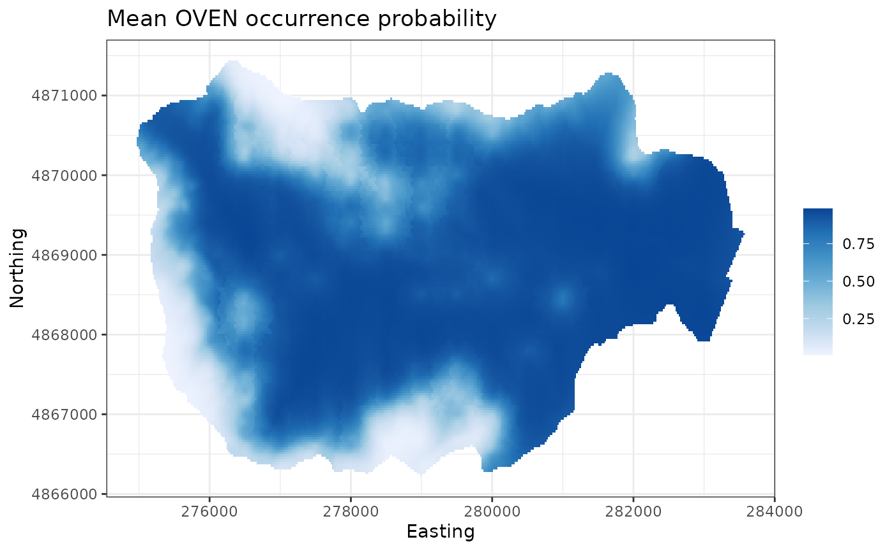
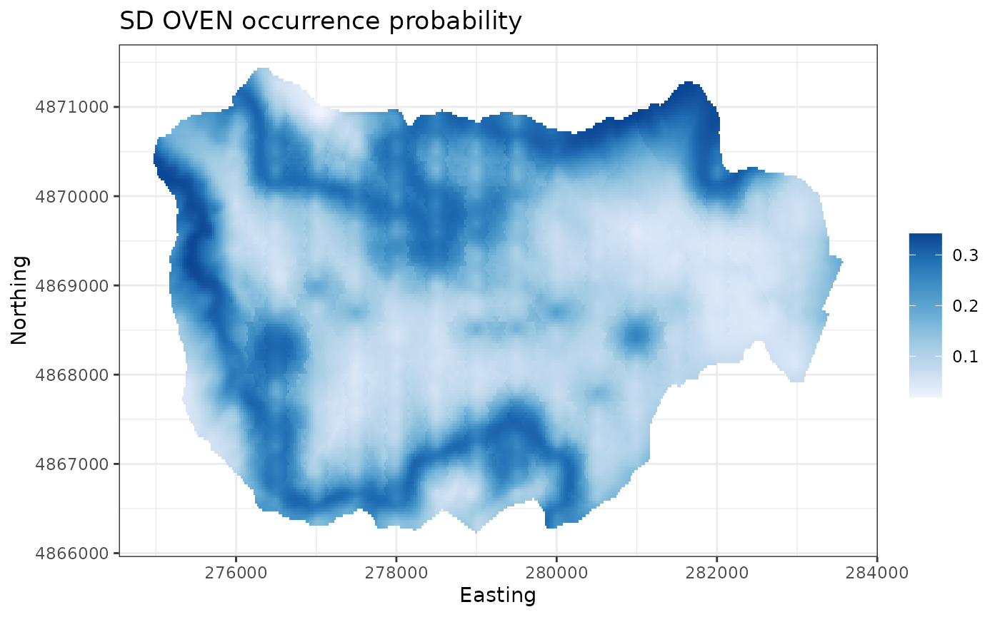
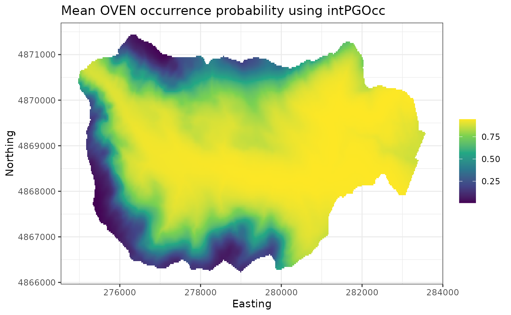
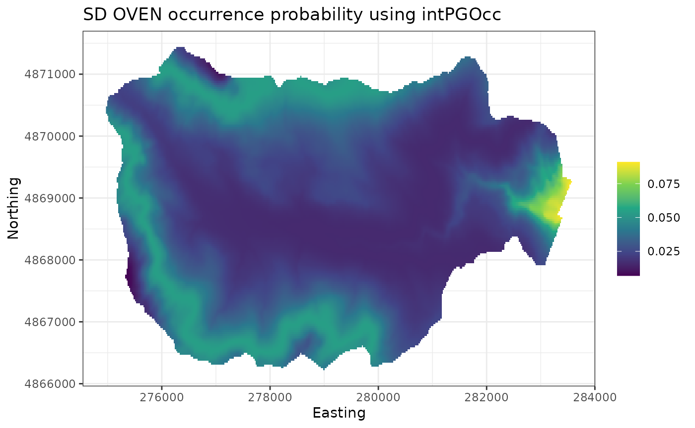

Fitting occupancy models with spOccupancy
Jeffrey W. Doser, Andrew O. Finley, Marc Kéry, Elise F. Zipkin
January 10, 2022
Source:vignettes/modelFitting.Rmd
modelFitting.RmdIntroduction
This vignette provides worked examples and explanations for fitting single-species, multi-species, and integrated occupancy models available in the spOccupancy R package. We will provide step by step examples on how to fit the following models:
- Occupancy model using
PGOcc(). - Spatial occupancy model using
spPGOcc(). - Multi-species occupancy model using
msPGOcc(). - Spatial multi-species occupancy model using
spMsPGOcc(). - Integrated occupancy model using
intPGOcc(). - Spatial integrated occupancy model using
spIntPGOcc().
We fit all occupancy models using Pólya-Gamma data augmentation (Polson, Scott, and Windle 2013) for computational efficiency (Pólya-Gamma is where the PG comes from in all spOccupancy model fitting function names). In this vignette, we will provide a brief description of each model, with full statistical details provided in a separate MCMC sampler vignette. We will also show how spOccupancy provides functions for posterior predictive checks as a Goodness of Fit assessment, model comparison and assessment using the Widely Applicable Information Criterion (WAIC), k-fold cross-validation, and out of sample predictions using standard R helper functions (e.g., predict()).
To get started, we load the spOccupancy package, as well as the coda package, which we will use for some MCMC summary and diagnostics. We will also use the stars and ggplot2 packages to create some basic plots of our results. We then set a seed so you can reproduce the same results as we do.
Example data set: Foliage-gleaning birds at Hubbard Brook
As an example data set throughout this vignette, we will use data from twelve foliage-gleaning bird species collected from point count surveys at Hubbard Brook Experimental Forest (HBEF) in New Hampshire, USA. Specific details on the data set, which is just a small subset from a long-term survey, are available on the Hubbard Brook website and Doser, Leuenberger, et al. (2021). The data are provided as part of the spOccupancy package and are loaded with data(hbef2015). Point count surveys were conducted at 373 sites over three replicates, each of 10 minutes in length and with a detection radius of 100m. In the data set provided here, we converted these data to detection-nondetection data. Some sites were not visited for all three replicates. Additional information on the data set (including individual species in the data set) can be viewed in the man page using help(hbef2015).
List of 4
$ y : num [1:12, 1:373, 1:3] 0 0 0 0 0 1 0 0 0 0 ...
..- attr(*, "dimnames")=List of 3
.. ..$ : chr [1:12] "AMRE" "BAWW" "BHVI" "BLBW" ...
.. ..$ : chr [1:373] "1" "2" "3" "4" ...
.. ..$ : chr [1:3] "1" "2" "3"
$ occ.covs: num [1:373, 1] 475 494 546 587 588 ...
..- attr(*, "dimnames")=List of 2
.. ..$ : NULL
.. ..$ : chr "Elevation"
$ det.covs:List of 2
..$ day: num [1:373, 1:3] 156 156 156 156 156 156 156 156 156 156 ...
..$ tod: num [1:373, 1:3] 330 346 369 386 409 425 447 463 482 499 ...
$ coords : num [1:373, 1:2] 280000 280000 280000 280001 280000 ...
..- attr(*, "dimnames")=List of 2
.. ..$ : chr [1:373] "1" "2" "3" "4" ...
.. ..$ : chr [1:2] "X" "Y"Thus, the object hbef2015 is a list comprised of the detection-nondetection data (y), covariates on the occurrence portion of the model (occ.covs), covariates on the detection portion of the model (det.covs), and the spatial coordinates of each site (coords) for use in spatial occupancy models and in plotting. This list is in the exact format required for input to spOccupancy model functions. hbef2015 contains data on 12 species in the three-dimensional array y, where the dimensions of y correspond to species (12), sites (373), and replicates (3). For single-species occupancy models in Section 2 and 3, we will only use data on the charming Ovenbird (OVEN; Seiurus aurocapilla), so we next subset the hbef2015 list to only include data from OVEN in a new object ovenHBEF.
sp.names <- dimnames(hbef2015$y)[[1]]
ovenHBEF <- hbef2015
ovenHBEF$y <- ovenHBEF$y[sp.names == "OVEN", , ]
table(ovenHBEF$y) # Quick summary.
0 1
518 588 We see that OVEN is detected at a little over half of all site-replicate combinations.
Single-species occupancy models
Basic model description
Let \(z_j\) be the true presence (1) or absence (0) of a species at site \(j\), with \(j = 1, \dots, J\). For our OVEN example, \(J = 373\). Following the basic occupancy model (MacKenzie et al. 2002; Tyre et al. 2003), we assume this latent occurrence variable arises from a Bernoulli process following
\[\begin{equation} \begin{split} &z_j \sim \text{Bernoulli}(\psi_j), \\ &\text{logit}(\psi_j) = \boldsymbol{x}^{\top}_j\boldsymbol{\beta}, \end{split} \end{equation}\]
where \(\psi_j\) is the probability of occurrence at site \(j\), which is a function of site-specific covariates \(\boldsymbol{X}\) and a vector of regression coefficients (\(\boldsymbol{\beta}\)).
We do not directly observe \(z_j\), but rather we observe an imperfect representation of the latent occurrence process as a result of imperfect detection (i.e., the failure to detect a species at a site when it is truly present). Let \(y_{j, k}\) be the observed detection (1) or nondetection (0) of a species of interest at site \(j\) during replicate \(k\) for each of \(k = 1, \dots, K_j\) replicates. Note that the number of replicates, \(K_j\), can vary by site and in practical applications will often be equal to 1 for a subset of sites (i.e., some sites will have no replicate surveys). For our OVEN example, the maximum value of \(K_j\) is three. We envision the detection-nondetection data as arising from a Bernoulli process conditional on the true latent occurrence process:
\[\begin{equation} \begin{split} &y_{j, k} \sim \text{Bernoulli}(p_{j, k}z_j), \\ &\text{logit}(p_{j, k}) = \boldsymbol{v}^{\top}_{j, k}\boldsymbol{\alpha}, \end{split} \end{equation}\]
where \(p_{j, k}\) is the probability of detecting a species at site \(j\) during replicate \(k\) (given it is present at site \(j\)), which is a function of site and replicate specific covariates \(\boldsymbol{V}\) and a vector of regression coefficients (\(\boldsymbol{\alpha}\)).
To complete the Bayesian specification of the model, we assign multivariate normal priors for the occurrence (\(\boldsymbol{\beta}\)) and detection (\(\boldsymbol{\alpha}\)) regression coefficients. To yield an efficient implementation of the occupancy model using a logit link function, we use Pólya-Gamma data augmentation (Polson, Scott, and Windle 2013), which is described in depth in a separate MCMC sampler vignette.
Fitting single-species occupancy models with PGOcc()
The PGOcc() function fits single-species occupancy models using Pólya-Gamma latent variables, which makes it more efficient than standard Bayesian implementations of occupancy models using a logit link function (Polson, Scott, and Windle 2013; Clark and Altwegg 2019). PGOcc() has the following arguments:
PGOcc(occ.formula, det.formula, data, inits, priors, n.samples,
n.omp.threads = 1, verbose = TRUE, n.report = 100,
n.burn = round(.10 * n.samples), n.thin = 1, n.chains = 1,
k.fold, k.fold.threads = 1, k.fold.seed, ...)The first two arguments, occ.formula and det.formula, use standard R model syntax to denote the covariates to be included in the occurrence and detection portions of the model, respectively. Only the right hand side of the formulas are included. Random intercepts can be included in both the occurrence and detection portions of the single-species occupancy model using lme4 syntax (Bates et al. 2015). For example, to include a random intercept for different observers in the detection portion of the model, we would include (1 | observer) in the det.formula, where observer indicates the specific observer for each data point. The names of variables given in the formulas should correspond to those found in data, which is a list consisting of the following tags: y (detection-nondetection data), occ.covs (occurrence covariates), det.covs (detection covariates). y should be stored as a sites x replicate matrix, occ.covs as a matrix or data frame with site-specific covariate values, and det.covs as a list with each list element corresponding to a covariate to include in the detection portion of the model. Covariates on detection can vary by site and/or survey, and so these covariates may be specified as a site by survey matrix for survey-level covariates or as a one-dimensional vector for survey level covariates. The ovenHBEF list is already in the required format. Here we will model OVEN occurrence as a function of linear and quadratic elevation and will include three observational covariates (linear and quadratic day of survey, time of day of survey) on the detection portion of the model. We standardize all covariates by using the scale() function in our model specification, and use the I() function to specify quadratic effects:
oven.occ.formula <- ~ scale(Elevation) + I(scale(Elevation)^2)
oven.det.formula <- ~ scale(day) + scale(tod) + I(scale(day)^2)
# Check out the format of ovenHBEF
str(ovenHBEF)List of 4
$ y : num [1:373, 1:3] 1 1 0 1 0 0 1 0 1 1 ...
..- attr(*, "dimnames")=List of 2
.. ..$ : chr [1:373] "1" "2" "3" "4" ...
.. ..$ : chr [1:3] "1" "2" "3"
$ occ.covs: num [1:373, 1] 475 494 546 587 588 ...
..- attr(*, "dimnames")=List of 2
.. ..$ : NULL
.. ..$ : chr "Elevation"
$ det.covs:List of 2
..$ day: num [1:373, 1:3] 156 156 156 156 156 156 156 156 156 156 ...
..$ tod: num [1:373, 1:3] 330 346 369 386 409 425 447 463 482 499 ...
$ coords : num [1:373, 1:2] 280000 280000 280000 280001 280000 ...
..- attr(*, "dimnames")=List of 2
.. ..$ : chr [1:373] "1" "2" "3" "4" ...
.. ..$ : chr [1:2] "X" "Y"Next, we specify the initial values for the MCMC sampler in inits. PGOcc() (and all other spOccupancy model fitting functions) will set initial values by default, but here we will do this explicitly, since in more complicated cases setting initial values close to the presumed solutions can be vital for success of an MCMC-based analysis. The default initial values for occurrence and detection regression coefficients (including the intercepts) are random values from the prior distributions adopted in the model, while the default initial values for the latent occurrence effects are set to 1 if the species was observed at a site and 0 otherwise. Initial values are specified in a list with the following tags: z (latent occurrence values), alpha (detection intercept and regression coefficients), and beta (occurrence intercept and regression coefficients). Below we set all initial values of the regression coefficients to 0, and set initial values for z based on the detection-nondetection data matrix. For the occurrence (beta) and detection (alpha) regression coefficients, the initial values are passed either as a vector of length equal to the number of estimated parameters (including an intercept, and in the order specified in the model formula), or as a single value if setting the same initial value for all parameters (including the intercept). Below we take the latter approach. To specify the initial values for the latent occurrence at each site (z), we must ensure we set the value to 1 at all sites where OVEN was detected at least once, because if we detect OVEN at a site then the value of z is 1 with complete certainty (under the assumption of the model that there are no false positives). If the initial value for z is set to 0 at one or more sites when the species was detected, the occupancy model will fail. spOccupancy will provide a clear error message if the supplied initial values for z are invalid. Below we use the raw detection-nondetection data and the apply() function to set the initial values to 1 if OVEN was detected at that site and 0 otherwise.
# Format with explicit specification of inits for alpha and beta
# with four detection parameters and three occurrence parameters
# (including the intercept).
oven.inits <- list(alpha = c(0, 0, 0, 0),
beta = c(0, 0, 0),
z = apply(ovenHBEF$y, 1, max, na.rm = TRUE))
# Format with abbreviated specification of inits for alpha and beta.
oven.inits <- list(alpha = 0,
beta = 0,
z = apply(ovenHBEF$y, 1, max, na.rm = TRUE))We next specify the priors for the occurrence and detection regression coefficients. The Pólya-Gamma data augmentation algorithm employed by spOccupancy assumes normal priors for both the detection and occurrence regression coefficients. These priors are specified in a list with tags beta.normal for occurrence and alpha.normal for detection parameters (including intercepts). Each list element is then itself a list, with the first element of the list consisting of the hypermeans for each coefficient and the second element of the list consisting of the hypervariances for each coefficient. Alternatively, the hypermean and hypervariances can be specified as a single value if the same prior is used for all regression coefficients. By default, spOccupancy will set the hypermeans to 0 and the hypervariances to 2.72, which corresponds to a relatively flat prior on the probability scale (0, 1; Lunn et al. (2013)). Broms, Hooten, and Fitzpatrick (2016), Northrup and Gerber (2018), and others show such priors are an adequate choice when the goal is to specify relatively non-informative priors. We will use these default priors here, but we specify them explicitly below for clarity
oven.priors <- list(alpha.normal = list(mean = 0, var = 2.72),
beta.normal = list(mean = 0, var = 2.72))Our last step is to specify the number of samples to produce with the MCMC algorithm (n.samples), the length of burn-in (n.burn), the rate at which we want to thin the posterior samples (n.thin), and the number of MCMC chains to run (n.chains). Note that currently spOccupancy runs multiple chains sequentially and does not allow chains to be run simultaneously in parallel across multiple threads. Instead, we allow for within-chain parallelization using the n.omp.threads argument. We can set n.omp.threads to a number greater than 1 and smaller than the number of threads on the computer you are using. Generally, setting n.omp.threads > 1 will not result in decreased run times for non-spatial models in spOccupancy, but can substantially decrease run time when fitting spatial models (Finley, Datta, and Banerjee 2020). Here we set n.omp.threads = 1.
For a simple single-species occupancy model, we shouldn’t need too many samples and will only need a small amount of burn-in and thinning. We will run the model using three chains to assess convergence using the Gelman-Rubin diagnostic (Rhat; Brooks and Gelman (1998)).
n.samples <- 5000
n.burn <- 3000
n.thin <- 2
n.chains <- 3We are now nearly set to run the occupancy model. The verbose argument is a logical value indicating whether or not MCMC sampler progress is reported to the screen. If verbose = TRUE, sampler progress is reported after every multiple of the specified number of iterations in the n.report argument. We set verbose = TRUE and n.report = 1000 to report progress after every 1000th MCMC iteration. The last three arguments to PGOcc() (k.fold, k.fold.threads, k.fold.seed) are used for performing k-fold cross-validation for model assessment, which we will illustrate in a subsequent section. For now, we won’t specify the arguments, which will tell PGOcc() not to perform k-fold cross-validation.
out <- PGOcc(occ.formula = oven.occ.formula,
det.formula = oven.det.formula,
data = ovenHBEF,
inits = oven.inits,
n.samples = n.samples,
priors = oven.priors,
n.omp.threads = 1,
verbose = TRUE,
n.report = 1000,
n.burn = n.burn,
n.thin = n.thin,
n.chains = n.chains)----------------------------------------
Preparing the data
----------------------------------------
----------------------------------------
Model description
----------------------------------------
Occupancy model with Polya-Gamma latent
variable fit with 373 sites.
Samples per Chain: 5000
Burn-in: 3000
Thinning Rate: 2
Number of Chains: 3
Total Posterior Samples: 3000
Source compiled with OpenMP support and model fit using 1 thread(s).
----------------------------------------
Chain 1
----------------------------------------
Sampling ...
Sampled: 1000 of 5000, 20.00%
-------------------------------------------------
Sampled: 2000 of 5000, 40.00%
-------------------------------------------------
Sampled: 3000 of 5000, 60.00%
-------------------------------------------------
Sampled: 4000 of 5000, 80.00%
-------------------------------------------------
Sampled: 5000 of 5000, 100.00%
----------------------------------------
Chain 2
----------------------------------------
Sampling ...
Sampled: 1000 of 5000, 20.00%
-------------------------------------------------
Sampled: 2000 of 5000, 40.00%
-------------------------------------------------
Sampled: 3000 of 5000, 60.00%
-------------------------------------------------
Sampled: 4000 of 5000, 80.00%
-------------------------------------------------
Sampled: 5000 of 5000, 100.00%
----------------------------------------
Chain 3
----------------------------------------
Sampling ...
Sampled: 1000 of 5000, 20.00%
-------------------------------------------------
Sampled: 2000 of 5000, 40.00%
-------------------------------------------------
Sampled: 3000 of 5000, 60.00%
-------------------------------------------------
Sampled: 4000 of 5000, 80.00%
-------------------------------------------------
Sampled: 5000 of 5000, 100.00%
names(out) # Look at the contents of the resulting object. [1] "rhat" "beta.samples" "alpha.samples" "z.samples"
[5] "psi.samples" "ESS" "X" "X.p"
[9] "y" "n.samples" "call" "n.post"
[13] "n.thin" "n.burn" "n.chains" "pRE"
[17] "psiRE" "run.time" PGOcc() returns a list of class PGOcc with a suite of different objects, many of them being coda::mcmc objects of posterior samples. Note the “Preparing the data” printed section doesn’t have any information shown in it. spOccupancy model fitting functions will present messages when preparing the data for the model in this section, or will print out the default priors or initial values used when they are not specified in the function call. Here we specified everything explicitly so no information was reported.
For a concise yet informative summary of the regression parameters and convergence of the MCMC chains, we can use summary() on the resulting PGOcc() object.
summary(out)
Call:
PGOcc(occ.formula = oven.occ.formula, det.formula = oven.det.formula,
data = ovenHBEF, inits = oven.inits, priors = oven.priors,
n.samples = n.samples, n.omp.threads = 1, verbose = TRUE,
n.report = 1000, n.burn = n.burn, n.thin = n.thin, n.chains = n.chains)
Samples per Chain: 5000
Burn-in: 3000
Thinning Rate: 2
Number of Chains: 3
Total Posterior Samples: 3000
Run Time (min): 0.166
Occurrence (logit scale):
Mean SD 2.5% 50% 97.5% Rhat ESS
(Intercept) 2.1204 0.2617 1.6406 2.1015 2.6650 1.0162 999.3549
scale(Elevation) -1.6839 0.2795 -2.3488 -1.6515 -1.2348 1.0223 436.6437
I(scale(Elevation)^2) -0.4042 0.1960 -0.7550 -0.4168 0.0195 1.0080 751.9279
Detection (logit scale):
Mean SD 2.5% 50% 97.5% Rhat ESS
(Intercept) 0.7993 0.1240 0.5575 0.7971 1.0401 1.0047 2112.750
scale(day) -0.0897 0.0787 -0.2404 -0.0908 0.0662 1.0007 2741.414
scale(tod) -0.0468 0.0784 -0.1990 -0.0467 0.1057 1.0012 3000.000
I(scale(day)^2) 0.0211 0.0963 -0.1691 0.0220 0.2104 1.0074 2669.285Note that all coefficients are printed on the logit scale. We see OVEN is fairly widespread (at the scale of the survey) in the forest given the large intercept value, which translates to a value of 0.89 on the probability scale (run plogis(2.12)). In addition, the negative linear and quadratic terms for Elevation suggest occurrence probability peaks at mid-elevations. On average, detection probability is about 0.69.
In principle, before we even look at the parameter summaries, we ought to ensure that the MCMC chains have reached convergence. The summary function also returns the Gelman-Rubin diagnostic (Brooks and Gelman 1998) and the effective samples size (ESS) of the posterior samples, which we can use to assess convergence. Here we see all Rhat values are less than 1.1 and the ESS values indicate adequate mixing of the MCMC chains. Additionally, the posterior samples in the PGOcc object are coda::mcmc objects, which we can quickly assess for convergence visually using trace plots.
plot(out$beta.samples, density = FALSE) # Occupancy parameters.
plot(out$alpha.samples, density = FALSE) # Detection parameters.
Posterior predictive checks
The function ppcOcc() performs a posterior predictive check on all spOccupancy model objects as a Goodness of Fit (GoF) assessment. The fundamental idea of GoF testing is that a good model should generate data that closely align with the observed data. If there are drastic differences in the true data from the model generated data, our model is likely not very useful (Hobbs and Hooten 2015). GoF assessments are more complicated using binary data, like detection-nondetection used in occupancy models, as standard approaches are not valid assessments for the raw data in binary response models such as occupancy models (Broms, Hooten, and Fitzpatrick 2016; McCullagh 2019). Thus, any approach to assess model fit for detection-nondetection data must bin, or aggregate, the raw values in some manner, and then perform a model fit assessment on the binned values. There are numerous ways we could envision binning the raw detection-nondetection values (MacKenzie and Bailey 2004; Kéry and Royle 2016). In spOccupancy, a posterior predictive check broadly takes the following steps:
- Fit the model using any of the model-fitting functions (here
PGOcc()), which generates replicated values for all detection-nondetection data points. - Bin both the actual and the replicated detection-nondetection data in a suitable manner, such as by site or replicate (MacKenzie and Bailey 2004).
- Compute a fit statistic on both the actual data and also on the model-generated ‘replicate data’.
- Compare the fit statistics for the true data and replicate data. If they are widely different, this suggests a lack of fit of the model to the actual data set at hand.
To peform a posterior predictive check, we send the resulting PGOcc model object as input to the ppcOcc() function, along with a fit statistic (fit.stat) and a numeric value indicating how to group, or bin, the data (group). Currently supported fit statistics include the Freeman-Tukey statistic and the Chi-Squared statistic (freeman-tukey or chi-squared, respectively, Kéry and Royle (2016)). Currently, ppcOcc() allows the user to group the data by row (site; group = 1) or column (replicate; group = 2). ppcOcc() will then return a set of posterior samples for the fit statistic (or discrepancy measure) using the actual data (fit.y) and model generated replicate data set (fit.y.rep), summed across all data points in the chosen manner. These values can be used with the summary() function to generate a Bayesian p-value, which is the probability, under the fitted model, to obtain a value of the fit statistic that is more extreme (i.e., larger) than the one observed, i.e., for the actual data. Bayesian p-values are sensitive to individual values, so we should also explore the discrepancy measures for each “grouped” data point. ppcOcc() returns a matrix of posterior quantiles for the fit statistic for both the observed (fit.y.group.quants) and model generated, replicate data (fit.y.rep.group.quants) for each “grouped” data point.
We next perform a posterior predictive check using the Freeman-Tukey statistic grouping the data by sites. We summarize the posterior predictive check with the summary() function, which reports a Bayesian p-value. A Bayesian p-value that hovers around 0.5 indicates adequate model fit, while values less than 0.1 or greater than 0.9 suggest our model does not fit the data well (Hobbs and Hooten 2015). As always with a simulation-based analysis using MCMC, you will get numerically slightly different values.
Call:
ppcOcc(object = out, fit.stat = "freeman-tukey", group = 1)
Samples per Chain: 5000
Burn-in: 3000
Thinning Rate: 2
Number of Chains: 3
Total Posterior Samples: 3000
Bayesian p-value: 0.177
Fit statistic: freeman-tukey The Bayesian p-value is the proportion of posterior samples of the fit statistic of the model generated data that are greater than the corresponding fit statistic of the true data, summed across all “grouped” data points. We can create a visual representation of the Bayesian p-value as follows (Kéry and Royle 2016):
ppc.df <- data.frame(fit = ppc.out$fit.y,
fit.rep = ppc.out$fit.y.rep,
color = 'lightskyblue1')
ppc.df$color[ppc.df$fit.rep > ppc.df$fit] <- 'lightsalmon'
plot(ppc.df$fit, ppc.df$fit.rep, bg = ppc.df$color, pch = 21,
ylab = 'Fit', xlab = 'True')
lines(ppc.df$fit, ppc.df$fit, col = 'black')
Our Bayesian p-value is greater than 0.1 indicating no lack of fit, although the above plot shows most of the fit statistics are smaller for the replicate data than the actual data set. Relying solely on the Bayesian p-value as an assessment of model fit is not always a great option, as individual data points can have an overbearing influence on the resulting summary value. Instead of summing across all data points for a single discrepancy measure, ppcOcc() also allows us to explore discrepancy measures on a “grouped” point by point basis. The resulting ppcOcc object will contain the objects fit.y.group.quants and fit.y.rep.group.quants, which contain quantiles of the posterior distributions for the discrepancy measures of each grouped data point. Below we plot the difference in the discrepancy measure between the replicate and actual data across each of the sites.
diff.fit <- ppc.out$fit.y.rep.group.quants[3, ] - ppc.out$fit.y.group.quants[3, ]
plot(diff.fit, pch = 19, xlab = 'Site ID', ylab = 'Replicate - True Discrepancy')
We see there are four sites that contriubte to the overall GoF measure far more than in proportion to their number, i.e., whose discrepancy measure for the actual data is much larger than the corresponding discrepancy for the replicate data. Here we will ignore this, but in a real analysis it might be very insightful to further explore these sites to see what could explain this pattern (e.g., are the sites close together in space? Could the data be the result of erroneous recording, or of extraordinary local habitat that is not adequately described by the occurrence covariates?). Although rarely done, closer investigations of outlying values in statistical analyses may sometimes teach one more than mere acceptance of a fitting model.
Model selection using WAIC and k-fold cross-validation
Posterior predictive checks allow us to assess how well our model fits the data, but they are not very useful if we want to compare multiple competing models and ultimately select a final model based on some criterion. Bayesian model selection is very much a constantly changing field. See Hooten and Hobbs (2015) for an accessible overview of Bayesian model selection for ecologists.
For Bayesian hierarchical models like occupancy models, the most common Bayesian model selection criterion, the deviance information criterion or DIC, is not applicable (Hooten and Hobbs 2015). Instead, the Widely Applicable Information Criterion (Watanabe 2010) is recommended to compare a set of models and select the best-performing model for final analysis.
The WAIC is calculated for all spOccupancy model objects using the function waicOcc(). We calculate the WAIC as
\[ \text{WAIC} = -2 \times (\text{elpd} - \text{pD}), \]
where elpd is the expected log pointwise predictive density and PD is the effective number of parameters. We calculate elpd by calculating the likelihood for each posterior sample, taking the mean of these likelihood values, taking the log of the mean of the likelihood values, and summing these values across all sites. We calculate the effective number of parameters by calculating the variance of the log likelihood for each site taken over all posterior samples, and then summing these values across all sites. See Appendix S1 from Broms, Hooten, and Fitzpatrick (2016) for more details.
We calculate the WAIC using waicOcc() for our OVEN model below (as always, note some slight differences with your solutions due to Monte Carlo error).
waicOcc(out) elpd pD WAIC
-632.951692 6.190938 1278.285260 For illustration, let’s next rerun the OVEN model, but this time we assume occurrence is constant across the HBEF, and subsequently compare the WAIC value to the full model
out.small <- PGOcc(occ.formula = ~ 1,
det.formula = oven.det.formula,
data = ovenHBEF,
inits = oven.inits,
n.samples = n.samples,
priors = oven.priors,
n.omp.threads = 1,
verbose = FALSE,
n.burn = n.burn,
n.thin = n.thin,
n.chains = n.chains)
waicOcc(out.small) elpd pD WAIC
-692.050496 4.912069 1393.925131 Smaller values of WAIC indicate models with better performance. We see the WAIC for the model with elevation is smaller than the intercept-only model, indicating elevation is an important predictor for OVEN occurrence in HBEF.
When focusing primarily on predictive performance, a k-fold cross-validation (CV) approach is another attractive, though computationally more intensive, alternative to compare a series of models, especially since WAIC may not always be reliable for occupancy models (Broms, Hooten, and Fitzpatrick 2016). In spOccupancy, k-fold cross-validation is accomplished using the arguments k.fold, k.fold.threads, and k.fold.seed in the model fitting function. A k-fold cross validation approach requires fitting a model \(k\) times, where each time the model is fit using \(J / k\) data points, where \(J\) is the total number of sites surveyed at least once in the data set. Each time the model is fit, it uses a different portion of the data and then predicts the remaining \(J - J/k\) hold out values. Because the data are not used to fit the model, CV yields true samples from the posterior predictive distribution that we can use to assess the predictive capacity of the model.
As a measure of out-of-sample predictive performance, we use the deviance as a scoring rule following Hooten and Hobbs (2015). For K-fold cross-validation, it is computed as
\[\begin{equation} -2 \sum_{k = 1}^K \text{log}\Bigg(\frac{\sum_{q = 1}^Q \text{Bernoulli}(\boldsymbol{y}_k \mid \boldsymbol{p}^{(q)}\boldsymbol{z}_k^{(q)})}{Q}\Bigg), \end{equation}\]
where \(\boldsymbol{p}^{(q)}\) and \(\boldsymbol{z}_k^{(q)}\) are MCMC samples of detection probability and latent occurrence, respectively, arising from a model that is fit without the observations \(\boldsymbol{y}_k\), and \(Q\) is the total number of posterior samples produced from the MCMC sampler. The -2 is used so that smaller values indicate better model fit, which aligns with most information criteria used for model assessment (like the WAIC implemented using waicOcc()).
The final three arguments in PGOcc() (k.fold, k.fold.threads, k.fold.seed) control whether or not k-fold cross validation is performed following the complete fit of the model using the entire data set. The k.fold argument indicates the number of \(k\) folds to use for cross-validation. If k.fold is not specified, cross-validation is not performed and k.fold.threads and k.fold.seed are ignored. The k.fold.threads argument indicates the number of threads to use for running the \(k\) models in parallel across multiple threads. Parallel processing is accomplished using the R packages foreach and doParallel. Specifying k.fold.threads > 1 can substantially decrease run time since it allows for models to be fit simultaneously on different threads rather than sequentially. The k.fold.seed indicates the seed used to randomly split the data into \(k\) groups. This is by default set to 100.
Below we refit the occupancy model with elevation (linear and quadratic) as an occurrence predictor this time performing 4-fold cross-validation. We set k.fold = 4 to perform 4-fold cross-validation and k.fold.threads = 1 to run the model using 1 thread. Normally we would set k.fold.threads = 4, but using multiple threads leads to complications when compiling this vignette, so we leave that to you to explore the computational improvements of performing cross-validation across multiple cores.
out.k.fold <- PGOcc(occ.formula = oven.occ.formula,
det.formula = oven.det.formula,
data = ovenHBEF,
inits = oven.inits,
n.samples = n.samples,
priors = oven.priors,
n.omp.threads = 1,
verbose = TRUE,
n.report = 1000,
n.burn = n.burn,
n.thin = n.thin,
n.chains = n.chains,
k.fold = 4,
k.fold.threads = 1)----------------------------------------
Preparing the data
----------------------------------------
----------------------------------------
Model description
----------------------------------------
Occupancy model with Polya-Gamma latent
variable fit with 373 sites.
Samples per Chain: 5000
Burn-in: 3000
Thinning Rate: 2
Number of Chains: 3
Total Posterior Samples: 3000
Source compiled with OpenMP support and model fit using 1 thread(s).
----------------------------------------
Chain 1
----------------------------------------
Sampling ...
Sampled: 1000 of 5000, 20.00%
-------------------------------------------------
Sampled: 2000 of 5000, 40.00%
-------------------------------------------------
Sampled: 3000 of 5000, 60.00%
-------------------------------------------------
Sampled: 4000 of 5000, 80.00%
-------------------------------------------------
Sampled: 5000 of 5000, 100.00%
----------------------------------------
Chain 2
----------------------------------------
Sampling ...
Sampled: 1000 of 5000, 20.00%
-------------------------------------------------
Sampled: 2000 of 5000, 40.00%
-------------------------------------------------
Sampled: 3000 of 5000, 60.00%
-------------------------------------------------
Sampled: 4000 of 5000, 80.00%
-------------------------------------------------
Sampled: 5000 of 5000, 100.00%
----------------------------------------
Chain 3
----------------------------------------
Sampling ...
Sampled: 1000 of 5000, 20.00%
-------------------------------------------------
Sampled: 2000 of 5000, 40.00%
-------------------------------------------------
Sampled: 3000 of 5000, 60.00%
-------------------------------------------------
Sampled: 4000 of 5000, 80.00%
-------------------------------------------------
Sampled: 5000 of 5000, 100.00%
----------------------------------------
Cross-validation
----------------------------------------Performing 4-fold cross-validation using 1 thread(s).We subsequently refit the intercept only occupancy model, and compare the deviance metrics from the 4-fold cross-validation.
# Model fitting information is surpressed for space.
out.int.k.fold <- PGOcc(occ.formula = ~ 1,
det.formula = oven.det.formula,
data = ovenHBEF,
inits = oven.inits,
n.samples = n.samples,
priors = oven.priors,
n.omp.threads = 1,
verbose = FALSE,
n.report = 1000,
n.burn = n.burn,
n.thin = n.thin,
n.chains = n.chains,
k.fold = 4,
k.fold.threads = 1)The cross-validation metric (model deviance) is stored in the k.fold.deviance tag of the resulting model object.
out.k.fold$k.fold.deviance # Larger model. [1] 1514.388
out.int.k.fold$k.fold.deviance # Intercept-only model.[1] 1532.473Similar to the results from the WAIC, CV also suggests that the model including elevation with a predictor outperforms the intercept only model.
Prediction
All model objects resulting from a call to spOccupancy model-fitting functions can be used with predict() to generate a series of posterior predictive samples at new locations, given the values of all covariates used in the model fitting process. The object hbefElev (which comes as part of the spOccupancy package) contains elevation data at a 30x30m resolution from the National Elevation Dataset across the entire HBEF. We load the data below
'data.frame': 46090 obs. of 3 variables:
$ val : num 914 916 918 920 922 ...
$ Easting : num 276273 276296 276318 276340 276363 ...
$ Northing: num 4871424 4871424 4871424 4871424 4871424 ...The column val contains the elevation values, while Easting and Northing contain the spatial coordinates that we will use for plotting. We can obtain posterior predictive samples for the occurrence probabilities at these sites by using the predict() function and our PGOcc fitted model object. Given that we standardized the elevation values when we fit the model, we need to standardize the elevation values for prediction using the exact same values of the mean and standard deviation of the elevation values used to fit the data.
elev.pred <- (hbefElev$val - mean(ovenHBEF$occ.covs[, 1])) / sd(ovenHBEF$occ.covs[, 1])
# These are the new intercept and covariate data.
X.0 <- cbind(1, elev.pred, elev.pred^2)
out.pred <- predict(out, X.0)For PGOcc objects, the predict function takes two arguments: (1) the PGOcc fitted model object; and (2) a matrix or data frame consisting of the design matrix for the prediction locations (which must include and intercept if our model contained one). The resulting object consists of posterior predictive samples for the latent occurrence probabilities (psi.0.samples) and latent occurrence values (z.0.samples). The beauty of the Bayesian paradigm, and the MCMC computing machinery, is that these predictions all have fully propagated uncertainty. We can use these values to create plots of the predicted mean occurrence values, as well as of their standard deviation as a measure of the uncertainty in these predictions aking to a standard error associated with maximum likelihood estimates. We could also produce a map for the Bayesian credible interval length as an alternative measure of prediction uncertainty or two maps, one showing the lower and the other the upper limit of, say, a 95% credible interval.
plot.dat <- data.frame(x = hbefElev$Easting,
y = hbefElev$Northing,
mean.psi = apply(out.pred$psi.0.samples, 2, mean),
sd.psi = apply(out.pred$psi.0.samples, 2, sd),
stringsAsFactors = FALSE)
# Make a species distribution map showing the point estimates,
# or predictions (posterior means)
dat.stars <- st_as_stars(plot.dat, dims = c('x', 'y'))
ggplot() +
geom_stars(data = dat.stars, aes(x = x, y = y, fill = mean.psi)) +
scale_fill_viridis_c(na.value = 'transparent') +
labs(x = 'Easting', y = 'Northing', fill = '',
title = 'Mean OVEN occurrence probability') +
theme_bw()
# Map of the associated uncertainty of these predictions
# (i.e., posterior sds)
ggplot() +
geom_stars(data = dat.stars, aes(x = x, y = y, fill = sd.psi)) +
scale_fill_viridis_c(na.value = 'transparent') +
labs(x = 'Easting', y = 'Northing', fill = '',
title = 'SD OVEN occurrence probability') +
theme_bw()
Single-species spatial occupancy models
Basic model description
When working across large spatial domains, accounting for residual spatial autocorrelation in species distributions can often improve predictive performance of a model, leading to more accurate species distribution maps (Guélat and Kéry 2018; Lany et al. 2020). We here extend the basic single-species occupancy model to incorporate a spatial Gaussian Process that accounts for unexplained spatial variation in species occurrence across a region of interest. Let \(\boldsymbol{s}_j\) denote the geographical coordinates of site \(j\) for \(j = 1, \dots, J\). In all spatially-explicit models, we include \(\boldsymbol{s}_j\) directly in the notation of spatially-indexed variables to indicate the model is spatially-explicit. More specifically, the occurrence probability at site \(j\) with coordinates \(\boldsymbol{s}_j\), \(\psi(\boldsymbol{s}_j)\), now takes the form
\[\begin{equation} \text{logit}(\psi(\boldsymbol{s}_j) = \boldsymbol{x}(\boldsymbol{s}_j)^{\top}\boldsymbol{\beta} + \omega(\boldsymbol{s}_j), \end{equation}\]
where \(\omega_j\) is a realization from a zero-mean spatial Gaussian Process, i.e.,
\[\begin{equation} \boldsymbol{\omega}(\boldsymbol{s}) \sim N(\boldsymbol{0}, \boldsymbol{\Sigma}(\boldsymbol{\boldsymbol{s}, \boldsymbol{s}', \theta})). \end{equation}\]
We define \(\boldsymbol{\Sigma}(\boldsymbol{s}, \boldsymbol{s}', \boldsymbol{\theta})\) as a \(J \times J\) covariance matrix that is a function of the distances between any pair of site coordinates \(\boldsymbol{s}\) and \(\boldsymbol{s}'\) and a set of parameters \((\boldsymbol{\theta})\) that govern the spatial process. The vector \(\boldsymbol{\theta}\) is equal to \(\boldsymbol{\theta} = \{\sigma^2, \phi, \nu\}\), where \(\sigma^2\) is a spatial variance parameter, \(\phi\) is a spatial decay parameter, and \(\nu\) is a spatial smoothness parameter. \(\nu\) is only specified when using a Matern correlation function.
The detection portion of the occupancy model remains unchanged from the non-spatial occupancy model. Single-species spatial occupancy models, like all models in spOccupancy are fit using Pólya-Gamma data augmentation (see MCMC sampler vignette for details).
When the number of sites is moderately large, say 1000, the above described spatial Gaussian process model can become drastically slow as a result of the need to take the inverse of the spatial covariance matrix \(\boldsymbol{\Sigma}(\boldsymbol{s}, \boldsymbol{s}', \boldsymbol{\theta})\) at each MCMC iteration. Numerous approximation methods exist to reduce this computational cost (see Heaton et al. (2019) for an overview and comparison of multiple methods). One attractive approach is the Nearest Neighbor Gaussian Process (NNGP; Datta et al. (2016)). Instead of modeling the spatial process using a full Gaussian Process, we replace the Gaussian Process prior specification with a NNGP, which leads to drastic improvements of run time with nearly identical inference and prediction as the full Gaussian Process specification. See Datta et al. (2016), Finley et al. (2019), and the MCMC sampler vignette for additional statistical details on NNGPs and their implementation in spatial occupancy models.
Fitting single-species spatial occupancy models with spPGOcc()
The function spPGOcc() fits single-species spatial occupancy models using Poacute;lya-Gamma latent variables, where spatial autocorrelation is accounted for using a spatial Gaussian Process. spPGOcc() fits spatial occupancy models using either a full Gaussian process or an NNGP. See Finley, Datta, and Banerjee (2020) for details on using NNGPs with Poacute;lya-Gamma latent variables.
We will fit the same occupancy model for OVEN that we fit previously using PGOcc(), but we will now make the model spatially explicit by incorporating a spatial process with spPGOcc(). First, let’s take a look at the arguments for spPGOcc():
spPGOcc(occ.formula, det.formula, data, inits, n.batch,
batch.length, accept.rate = 0.43, priors,
cov.model = "exponential", tuning, n.omp.threads = 1,
verbose = TRUE, NNGP = FALSE, n.neighbors = 15,
search.type = "cb", n.report = 100,
n.burn = round(.10 * n.batch * batch.length),
n.thin = 1, n.chains = 1, k.fold, k.fold.threads = 1,
k.fold.seed = 100, ...)We will walk through each of the arguments to spPGOcc() in the context of our Ovenbird example. The occurrence (occ.formula) and detection (det.formula) formulas, as well as the list of data (data), take the same form as we saw in PGOcc, with the exception that random intercepts can now only be specified for detection (i.e., in det.formula). Notice the coords matrix in the ovenHBEF list of data. We did not use this for PGOcc() but specifying the spatial coordinates in data is required for all spatially explicit models in spOccupancy.
oven.occ.formula <- ~ scale(Elevation) + I(scale(Elevation)^2)
oven.det.formula <- ~ scale(day) + scale(tod) + I(scale(day)^2)
str(ovenHBEF) # coords is required for spPGOcc.List of 4
$ y : num [1:373, 1:3] 1 1 0 1 0 0 1 0 1 1 ...
..- attr(*, "dimnames")=List of 2
.. ..$ : chr [1:373] "1" "2" "3" "4" ...
.. ..$ : chr [1:3] "1" "2" "3"
$ occ.covs: num [1:373, 1] 475 494 546 587 588 ...
..- attr(*, "dimnames")=List of 2
.. ..$ : NULL
.. ..$ : chr "Elevation"
$ det.covs:List of 2
..$ day: num [1:373, 1:3] 156 156 156 156 156 156 156 156 156 156 ...
..$ tod: num [1:373, 1:3] 330 346 369 386 409 425 447 463 482 499 ...
$ coords : num [1:373, 1:2] 280000 280000 280000 280001 280000 ...
..- attr(*, "dimnames")=List of 2
.. ..$ : chr [1:373] "1" "2" "3" "4" ...
.. ..$ : chr [1:2] "X" "Y"The initial values (inits) are again specified in a list. Valid tags for initial values now additionally include the parameters associated with the spatial random effects. These include: sigma.sq (spatial variance parameter), phi (spatial range parameter), w (the latent spatial random effects at each site), and nu (spatial smoothness parameter), where the latter is only specified if adopting a Matern covariance function (i.e., cov.model = 'matern'). spOccupancy supports four spatial covariance models (exponential, spherical, gaussian, and matern), which are specified in the cov.model argument. Here we will use an exponential covariance model. As a initial value for the spatial range parameter phi, we compute the mean distance between points in HBEF and then set it equal to 3 divided by this mean distance. When using an exponential covariance function, \(\frac{3}{\phi}\) is the effective range, or the distance at which the residual spatial correlation between two sites drops to 0.05 (Banerjee, Carlin, and Gelfand 2003). Thus our initial guess for this effective range is the average distance betweeen sites across HBEF.
# Pair-wise distances between all sites
dist.hbef <- dist(ovenHBEF$coords)
# Exponential covariance model
cov.model <- "exponential"
# Specify list of inits
oven.inits <- list(alpha = 0,
beta = 0,
z = apply(ovenHBEF$y, 1, max, na.rm = TRUE),
sigma.sq = 2,
phi = 3 / mean(dist.hbef),
w = rep(0, nrow(ovenHBEF$y)))The next three arguments (n.batch, batch.length, and accept.rate) are all related to the Adaptive MCMC sampler used when we fit the model. Updates for the spatial range parameter (and the smoothness parameter if cov.model = 'matern') require the use of a Metropolis-Hastings algorithm. We implement an adaptive Metropolis-Hastings algorithm as discussed in Roberts and Rosenthal (2009). This algorithm adjusts the tuning values for each parameter that requires a Metropolis-Hastings update within the sampler itself. This process results in a more efficient sampler than if we were to fix the tuning parameters prior to fitting the model. The parameter accept.rate is the target acceptance rate for each parameter, and the algorithm will adjust the tuning parameters to hover around this value. The default value is 0.43, which we suggest leaving as is unless you have a good reason to change it. The tuning parameters are updated after a single “batch”. We must specify the total n.batch batches, where each “batch” consists of batch.length MCMC samples. Thus, the total number of MCMC samples is n.batch * batch.length. Typically, we set batch.length = 25 and then play around with n.batch until convergence is reached. Here we set n.batch = 400 for a total of 10000 MCMC samples in each of 3 chains. We will additionally specify a burn-in period of length 2000 and a thinning rate of 8. Importantly, we also need to specify an initial value for the tuning parameters for the spatial decay and smoothness parameters (if applicable). These values are supplied as input in the form of a list with tags phi and nu. The initial tuning value can be any value greater than 0, but we recommend starting the value out around 0.5. After some initial runs of the model, if you notice the final acceptance rate of a parameter is much larger or smaller than the target acceptance rate (accept.rate), you can then change the initial tuning value to get closer to the target rate. Here we set the initial tuning value for phi to 1 after some initial exploratory runs of the model.
batch.length <- 25
n.batch <- 400
n.burn <- 2000
n.thin <- 20
n.chains <- 3
oven.tuning <- list(phi = 1)Priors are again specified in a list in the argument priors. We assume an inverse gamma prior for the spatial variance parameter sigma.sq (the tag of which is sigma.sq.ig), and uniform priors for the spatial decay parameter phi and smoothness parameter nu (if using the Matern correlation function), with the associated tags phi.unif and nu.unif. The hyperparameters of the inverse Gamma are passed as a vector of length two, with the first and second elements corresponding to the shape and scale, respectively. The lower and upper bounds of the uniform distribution are passed as a two-element vector for the uniform priors.
Note that the priors for the spatial parameters in a spatially-explicit model must be at least weakly informative for the model to converge (Banerjee, Carlin, and Gelfand 2003). For the inverse-Gamma prior on the spatial variance, we typically set the shape parameter to 2 and the scale parameter equal to our best guess of the spatial variance. Based on our previous work with these data, we expected the residual spatial variation to be relatively small, and so we set the scale parameter below to 1. For the spatial decay parameter, we determine the bounds of the uniform distribution by computing the smallest distance between sites and the largest distance between sites. We then set the lower bound of the uniform to 3/max and the upper bound to 3/min, where min and max correspond to the predetermined distances between sites.
min.dist <- min(dist.hbef)
max.dist <- max(dist.hbef)
oven.priors <- list(beta.normal = list(mean = 0, var = 2.72),
alpha.normal = list(mean = 0, var = 2.72),
sigma.sq.ig = c(2, 1),
phi.unif = c(3/max.dist, 3/min.dist))The argument n.omp.threads specifies the number of threads to use for within-chain parallelization, while verbose specifies whether or not to print the progress of the sampler. We highly recommend setting verbose = TRUE for all spatial models to ensure the adaptive MCMC is working as you want (and this is the reason for why this is the default for this argument). The argument n.report specifies the interval to report the Metropolis-Hastings sampler acceptance rate. Note that n.report is specified in terms of batches, not the overall number of samples. Below we set n.report = 100, which will result in information on the acceptance rate and tuning parameters every 100th batch (not sample).
n.omp.threads <- 1
verbose <- TRUE
n.report <- 100 # Report progress at every 100th batch.The parameters NNGP, n.neighbors, and search.type relate to whether or not you want to fit the model with a Gaussian Process or with NNGP, which is a much more computationally efficient approximation. The argument NNGP is a logical value indicating whether to fit the model with an NNGP (TRUE) or a regular Gaussian Process (FALSE). For data sets that have more than 1000 locations, using an NNGP will have substantial improvements in run time. Even for more modest-sized data sets, like the HBEF data set, using an NNGP will be quite a bit faster (especially for multi-species models as shown in subsequent sections). Unless your data set is particularly small (e.g., 100 points) and you are concerned about the NNGP approximation, we recommend setting NNGP = TRUE, which is the default. The argument n.neighbors and search.type specify the number of neighbors used in the NNGP and the nearest neighbor search algorithm, respectively, to use for the NNGP model. Generally, the default values of these arguments will be adequate. Datta et al. (2016) showed that setting n.neighbors = 15 is usually sufficient, although for certain data sets a good approximation can be achieved with as few as five neighbors, which could substantially decrease run time for the model. We generally recommend leaving search.type = "cb", as this results in a fast code book nearest neighbor search algorithm. However, details on when you may want to change this are described in Finley, Datta, and Banerjee (2020). We will run an NNGP model using the default value for search.type and setting n.neighbors = 5, which we have found in exploratory analysis to closely approximate a full Gaussian Process.
We now fit the model (without k-fold cross-validation) and summarize the results using summary().
# Approx. run time: 68 seconds
out.sp <- spPGOcc(occ.formula = oven.occ.formula,
det.formula = oven.det.formula,
data = ovenHBEF,
inits = oven.inits,
n.batch = n.batch,
batch.length = batch.length,
priors = oven.priors,
cov.model = cov.model,
NNGP = TRUE,
n.neighbors = 5,
tuning = oven.tuning,
n.report = n.report,
n.burn = n.burn,
n.thin = n.thin,
n.chains = n.chains)----------------------------------------
Preparing the data
----------------------------------------
----------------------------------------
Building the neighbor list
----------------------------------------
----------------------------------------
Building the neighbors of neighbors list
----------------------------------------
----------------------------------------
Model description
----------------------------------------
NNGP Occupancy model with Polya-Gamma latent
variable fit with 373 sites.
Samples per chain: 10000 (400 batches of length 25)
Burn-in: 2000
Thinning Rate: 20
Number of Chains: 3
Total Posterior Samples: 1200
Using the exponential spatial correlation model.
Using 5 nearest neighbors.
Source compiled with OpenMP support and model fit using 1 thread(s).
Adaptive Metropolis with target acceptance rate: 43.0
----------------------------------------
Chain 1
----------------------------------------
Sampling ...
Batch: 100 of 400, 25.00%
Acceptance Tuning
32.0 0.38674
-------------------------------------------------
Batch: 200 of 400, 50.00%
Acceptance Tuning
48.0 0.32303
-------------------------------------------------
Batch: 300 of 400, 75.00%
Acceptance Tuning
56.0 0.31037
-------------------------------------------------
Batch: 400 of 400, 100.00%
----------------------------------------
Chain 2
----------------------------------------
Sampling ...
Batch: 100 of 400, 25.00%
Acceptance Tuning
16.0 0.28650
-------------------------------------------------
Batch: 200 of 400, 50.00%
Acceptance Tuning
44.0 0.31037
-------------------------------------------------
Batch: 300 of 400, 75.00%
Acceptance Tuning
28.0 0.30422
-------------------------------------------------
Batch: 400 of 400, 100.00%
----------------------------------------
Chain 3
----------------------------------------
Sampling ...
Batch: 100 of 400, 25.00%
Acceptance Tuning
60.0 0.31664
-------------------------------------------------
Batch: 200 of 400, 50.00%
Acceptance Tuning
56.0 0.29820
-------------------------------------------------
Batch: 300 of 400, 75.00%
Acceptance Tuning
52.0 0.30422
-------------------------------------------------
Batch: 400 of 400, 100.00%
class(out.sp) # Look at what spOccupancy produced.[1] "spPGOcc"
names(out.sp) [1] "rhat" "coords" "z.samples" "X"
[5] "w.samples" "psi.samples" "X.p" "y"
[9] "beta.samples" "alpha.samples" "theta.samples" "ESS"
[13] "call" "n.samples" "n.neighbors" "cov.model.indx"
[17] "type" "n.post" "n.thin" "n.burn"
[21] "n.chains" "pRE" "run.time"
summary(out.sp)
Call:
spPGOcc(occ.formula = oven.occ.formula, det.formula = oven.det.formula,
data = ovenHBEF, inits = oven.inits, priors = oven.priors,
tuning = oven.tuning, cov.model = cov.model, NNGP = TRUE,
n.neighbors = 5, n.batch = n.batch, batch.length = batch.length,
n.report = n.report, n.burn = n.burn, n.thin = n.thin, n.chains = n.chains)
Samples per Chain: 10000
Burn-in: 2000
Thinning Rate: 20
Number of Chains: 3
Total Posterior Samples: 1200
Run Time (min): 1.3174
Occurrence (logit scale):
Mean SD 2.5% 50% 97.5% Rhat ESS
(Intercept) 2.8407 0.7557 1.3345 2.8192 4.3929 1.0328 86.7715
scale(Elevation) -2.4740 0.6172 -3.8453 -2.4077 -1.4978 1.0417 161.3823
I(scale(Elevation)^2) -0.6816 0.3456 -1.3917 -0.6824 -0.0157 1.0343 421.8997
Detection (logit scale):
Mean SD 2.5% 50% 97.5% Rhat ESS
(Intercept) 0.8233 0.1225 0.5781 0.8240 1.0512 1.0016 1409.484
scale(day) -0.0924 0.0769 -0.2422 -0.0950 0.0537 1.0069 1516.880
scale(tod) -0.0495 0.0779 -0.2022 -0.0481 0.1064 0.9995 1200.000
I(scale(day)^2) 0.0243 0.0970 -0.1599 0.0230 0.2195 1.0033 1200.000
Spatial Covariance:
Mean SD 2.5% 50% 97.5% Rhat ESS
sigma.sq 5.4571 3.8223 1.2593 4.4723 15.6032 1.0437 87.3858
phi 0.0020 0.0009 0.0006 0.0019 0.0040 1.0140 121.5155All Rhat values are less than 1.1, indicating we have reached adequate convergence. The effective sample sizes of the spatial covariance parameters are somewhat low, which indicates limited mixing of these parameters. This is common when fitting spatial models. We note that there is substantial MC error in the spatial covariance parameters, and so your estimates may be slightly different from what we have shown here. We see spPGOcc() returns a list of class spPGOcc and consists of posterior samples for all parameters. Note that posterior samples for spatial parameters are stored in the list element theta.samples.
Posterior predictive checks
For our posterior predictive check, we send the spPGOcc model object to the ppcOcc() function, this time grouping by replicate, or survey occassion, (group = 2) instead of by site (group = 1).
Call:
ppcOcc(object = out.sp, fit.stat = "freeman-tukey", group = 2)
Samples per Chain: 10000
Burn-in: 2000
Thinning Rate: 20
Number of Chains: 3
Total Posterior Samples: 1200
Bayesian p-value: 0.7541667
Fit statistic: freeman-tukey The Bayesian p-value indicates adequate fit of the spatial occupancy model.
Model selection using WAIC and k-fold cross-validation
We next use the waicOcc() function to compute the WAIC, which we can compare to the non-spatial model to assess the benefit of incorporating the spatial random effects in the occurrence model.
waicOcc(out.sp) elpd pD WAIC
-569.35380 45.70591 1230.11942
# Compare to non-spatial model
waicOcc(out) elpd pD WAIC
-632.951692 6.190938 1278.285260 We see the WAIC value for the spatial model is substantially reduced compared to the nonspatial model, indicating that incorporation of the spatial random effects yields an improvement in predictive performance.
k-fold cross-validation is accomplished by specifying the k.fold argument in spPGOcc just as we saw in PGOcc.
Prediction
Finally, we can perform out of sample prediction using the predict function just as before. Prediction for spatial models is more computationally intensive than for non-spatial models, and so the predict function for spPGOcc class objects also has options for parallelization (n.omp.threads) and reporting sampler progress (verbose and n.report). Note that for spPGOcc(), you also need to supply the coordinates of the out of sample prediction locations in addition to the covariate values.
# Do prediction.
coords.0 <- as.matrix(hbefElev[, c('Easting', 'Northing')])
# Approx. run time: 6 min
out.sp.pred <- predict(out.sp, X.0, coords.0, verbose = FALSE)
# Produce a species distribution map (posterior predictive means of occupancy)
plot.dat <- data.frame(x = hbefElev$Easting,
y = hbefElev$Northing,
mean.psi = apply(out.sp.pred$psi.0.samples, 2, mean),
sd.psi = apply(out.sp.pred$psi.0.samples, 2, sd))
dat.stars <- st_as_stars(plot.dat, dims = c('x', 'y'))
ggplot() +
geom_stars(data = dat.stars, aes(x = x, y = y, fill = mean.psi)) +
scale_fill_viridis_c(na.value = 'transparent') +
labs(x = 'Easting', y = 'Northing', fill = '',
title = 'Mean OVEN occurrence probability') +
theme_bw()
# Produce an uncertainty map of the SDM (posterior predictive SDs of occupancy)
ggplot() +
geom_stars(data = dat.stars, aes(x = x, y = y, fill = sd.psi)) +
scale_fill_viridis_c(na.value = 'transparent') +
labs(x = 'Easting', y = 'Northing', fill = '',
title = 'SD OVEN occurrence probability') +
theme_bw()
Comparing this to the non-spatial occupancy model, the spatial model appears to identify areas in HBEF with low OVEN occurrence that are not captured in the non-spatial model. We will resist trying to hypothesize what environmental factors could lead to these patterns.
Multi-species occupancy models
Basic model description
Let \(z_{i, j}\) be the true presence (1) or absence (0) of a species \(i\) at site \(j\), with \(j = 1, \dots, J\) and \(i = 1, \dots, N\). We assume the latent occurrence variable arises from a Bernoulli process following
\[\begin{equation} \begin{split} &z_{i, j} \sim \text{Bernoulli}(\psi_{i, j}), \\ &\text{logit}(\psi_{i, j}) = \boldsymbol{x}^{\top}_{j}\boldsymbol{\beta}_i, \end{split} \end{equation}\]
where \(\psi_{i, j}\) is the probability of occurrence of species \(i\) at site \(j\), which is a function of site-specific covariates \(\boldsymbol{X}\) and a vector of species-specific regression coefficients (\(\boldsymbol{\beta}_i\)). The regression coefficients in multi-species occupancy models are envisioned as random effects arising from a common community level distribution:
\[\begin{equation} \boldsymbol{\beta}_i \sim \text{Normal}(\boldsymbol{\mu}_{\beta}, \boldsymbol{T}_{\beta}), \end{equation}\]
where \(\boldsymbol{\mu}_{\beta}\) is a vector of community level mean effects for each occurrence covariate effect (including the intercept) and \(\boldsymbol{T}_{\beta}\) is a diagonal matrix with diagonal elements \(\boldsymbol{\tau}^2_{\beta}\) that represent the variability of each occurrence covariate effect among species in the community.
We do not directly observe \(z_{i, j}\), but rather we observe an imperfect representation of the latent occurrence process. Let \(y_{i, j, k}\) be the observed detection (1) or nondetection (0) of a species \(i\) at site \(j\) during replicate/survey \(k\) for each of \(k = 1, \dots, K_j\) replicates at each site \(j\). We envision the detection-nondetection data as arising from a Bernoulli process conditional on the true latent occurrence process:
\[\begin{equation} \begin{split} &y_{i, j, k} \sim \text{Bernoulli}(p_{i, j, k}z_{i, j}), \\ &\text{logit}(p_{i, j, k}) = \boldsymbol{v}^{\top}_{i, j, k}\boldsymbol{\alpha}_i, \end{split} \end{equation}\]
where \(p_{i, j, k}\) is the probability of detecting species \(i\) at site \(j\) during replicate \(k\) (given it is present at site \(j\)), which is a function of site and replicate specific covariates \(\boldsymbol{V}\) and a vector of species-specific regression coefficients (\(\boldsymbol{\alpha}_i\)). Similarly to the occurrence regression coefficients, the species specific detection coefficients are envisioned as random effects arising from a common community level distribution:
\[\begin{equation} \boldsymbol{\alpha}_i \sim \text{Normal}(\boldsymbol{\mu}_{\alpha}, \boldsymbol{T}_{\alpha}), \end{equation}\]
where \(\boldsymbol{\mu}_{\alpha}\) is a vector of community level mean effects for each detection covariate effect (including the intercept) and \(\boldsymbol{T}_{\alpha}\) is a diagonal matrix with diagonal elements \(\boldsymbol{\tau}^2_{\alpha}\) that represent the variability of each detection covariate effect among species in the community.
To complete the Bayesian specification of the model, we assign multivariate normal priors for the occurrence (\(\boldsymbol{\mu}_{\beta}\)) and detection (\(\boldsymbol{\mu}_{\alpha}\)) community-level regression coefficient means and independent inverse-Gamma priors for each element of \(\boldsymbol{\tau}^2_{\beta}\) and \(\boldsymbol{\tau}^2_{\alpha}\). We again use Poacute;lya-Gamma data augmentation to yield an efficient implementation of the multi-species occupancy model, which is described in depth in the MCMC sampler vignette.
Fitting multi-species occupancy models with msPGOcc()
spOccupancy uses nearly identical syntax for fitting multi-species occupancy models as it does for single-species models and provides the same functionality for posterior predictive checks, model assessment and selection using WAIC and k-fold cross-validation, and out of sample prediction. The msPGOcc() function fits nonspatial multi-species occupancy models using Pólya-Gamma latent variables, which results in substantial increases in run time compared to standard implementations of logit link multi-species occupancy models. msPGOcc() has exactly the same arguments as PGOcc():
msPGOcc(occ.formula, det.formula, data, inits, n.samples, priors,
n.omp.threads = 1, verbose = TRUE, n.report = 100,
n.burn = round(.10 * n.samples), n.thin = 1, n.chains = 1,
k.fold, k.fold.threads = 1, k.fold.seed, ...)For illustration, we will again use the Hubbard Brook data in hbef2015, but we will now model occurrence for all 12 species in the community. Below we reload the hbef2015 data set to get a fresh copy.
data(hbef2015)
# str(hbef2015) # Remind ourselves of what's in it (not shown).We will model occurrence for all species as a function of linear and quadratic terms for elevation, and detection as a function of linear and quadratic day of survey as well as the time of day during which the survey was conducted. These models are specified in occ.formula and det.formula as before, which reference variables stored in the data list. Random intercepts can be included in both the occurrence and detection portions of the occupancy model using lme4 syntax (Bates et al. 2015). For multi-species models, the multi-species detection-nondetection data y is now a three-dimensional array with dimensions corresponding to species, sites, and replicates. This is how the data are provided in the hbef2015 object, so we don’t need to do any additional preparations.
occ.ms.formula <- ~ scale(Elevation) + I(scale(Elevation)^2)
det.ms.formula <- ~ scale(day) + scale(tod) + I(scale(day)^2)
str(hbef2015)List of 4
$ y : num [1:12, 1:373, 1:3] 0 0 0 0 0 1 0 0 0 0 ...
..- attr(*, "dimnames")=List of 3
.. ..$ : chr [1:12] "AMRE" "BAWW" "BHVI" "BLBW" ...
.. ..$ : chr [1:373] "1" "2" "3" "4" ...
.. ..$ : chr [1:3] "1" "2" "3"
$ occ.covs: num [1:373, 1] 475 494 546 587 588 ...
..- attr(*, "dimnames")=List of 2
.. ..$ : NULL
.. ..$ : chr "Elevation"
$ det.covs:List of 2
..$ day: num [1:373, 1:3] 156 156 156 156 156 156 156 156 156 156 ...
..$ tod: num [1:373, 1:3] 330 346 369 386 409 425 447 463 482 499 ...
$ coords : num [1:373, 1:2] 280000 280000 280000 280001 280000 ...
..- attr(*, "dimnames")=List of 2
.. ..$ : chr [1:373] "1" "2" "3" "4" ...
.. ..$ : chr [1:2] "X" "Y"Next we specify the initial values in inits. For multi-species occupancy models, we supply initial values for community-level and species-level parameters. In msPGOcc(), we will supply initial values for the following parameters: alpha.comm (community-level detection coefficients), beta.comm (community-level occurrence coefficients), alpha (species-level detection coefficients), beta (species-level occurrence coefficients), tau.sq.beta (community-level occurrence variance parameters), tau.sq.alpha (community-level detection variance parameters, z (latent occurrence variables for all species). These are all specified in a single list. Initial values for community-level parameters are either vectors of length corresponding to the number of community-level detection or occurrence parameters in the model (including the intercepts) or a single value if all parameters are assigned the same initial values. Initial values for species level parameters are either matrices with the number of rows indicating the number of species, and each column corresponding to a different regression parameter, or a single value if the same initial value is used for all species and parameters. The initial values for the latent occurrence matrix are specified as a matrix with \(N\) rows corresponding to the number of species and \(J\) columns corresponding to the number of sites.
N <- dim(hbef2015$y)[1]
ms.inits <- list(alpha.comm = 0,
beta.comm = 0,
beta = 0,
alpha = 0,
tau.sq.beta = 1,
tau.sq.alpha = 1,
z = apply(hbef2015$y, c(1, 2), max, na.rm = TRUE))In multi-species models, we specify priors on the community-level coefficients (or hyperparameters) rather than the species-level effects. For nonspatial models, these priors are specified with the following tags: beta.comm.normal (normal prior on the community-level occurrence mean effects), alpha.comm.normal (normal prior on the community-level detection mean effects), tau.sq.beta.ig (inverse-Gamma prior on the community-level occurrence variance parameters), tau.sq.alpha.ig (inverse-Gamma prior on the community-level detection variance parameters). Each tag consists of a list with elements corresponding to the mean and variance for normal priors and scale and shape for inverse-Gamma priors. Values can be specified individually for each parameter or as a single value if the same prior is assigned to all parameters of a given type.
Below we specify normal priors to be relatively vague on the probability scale with a mean of 0 and a variance of 2.72, and specify vague inverse gamma priors on the community-level variance parameters setting both the shape and scale parameters to 0.1.
ms.priors <- list(beta.comm.normal = list(mean = 0, var = 2.72),
alpha.comm.normal = list(mean = 0, var = 2.72),
tau.sq.beta.ig = list(a = 0.1, b = 0.1),
tau.sq.alpha.ig = list(a = 0.1, b = 0.1))All that’s now left to do is specify the number of threads to use (n.omp.threads), the number of MCMC samples (n.samples), the amount of samples to discard as burn-in (n.burn), the thinning rate (n.thin), and arguments to control the display of sampler progress (verbose, n.report).
# Approx. run time: 8 min
out.ms <- msPGOcc(occ.formula = occ.ms.formula,
det.formula = det.ms.formula,
data = hbef2015,
inits = ms.inits,
n.samples = 30000,
priors = ms.priors,
n.omp.threads = 1,
verbose = TRUE,
n.report = 6000,
n.burn = 10000,
n.thin = 50,
n.chains = 3)----------------------------------------
Preparing the data
----------------------------------------
----------------------------------------
Model description
----------------------------------------
Multispecies Occupancy Model with Polya-Gamma latent
variable fit with 373 sites and 12 species.
Samples per Chain: 30000
Burn-in: 10000
Thinning Rate: 50
Number of Chains: 3
Total Posterior Samples: 1200
Source compiled with OpenMP support and model fit using 1 thread(s).
----------------------------------------
Chain 1
----------------------------------------
Sampling ...
Sampled: 6000 of 30000, 20.00%
-------------------------------------------------
Sampled: 12000 of 30000, 40.00%
-------------------------------------------------
Sampled: 18000 of 30000, 60.00%
-------------------------------------------------
Sampled: 24000 of 30000, 80.00%
-------------------------------------------------
Sampled: 30000 of 30000, 100.00%
----------------------------------------
Chain 2
----------------------------------------
Sampling ...
Sampled: 6000 of 30000, 20.00%
-------------------------------------------------
Sampled: 12000 of 30000, 40.00%
-------------------------------------------------
Sampled: 18000 of 30000, 60.00%
-------------------------------------------------
Sampled: 24000 of 30000, 80.00%
-------------------------------------------------
Sampled: 30000 of 30000, 100.00%
----------------------------------------
Chain 3
----------------------------------------
Sampling ...
Sampled: 6000 of 30000, 20.00%
-------------------------------------------------
Sampled: 12000 of 30000, 40.00%
-------------------------------------------------
Sampled: 18000 of 30000, 60.00%
-------------------------------------------------
Sampled: 24000 of 30000, 80.00%
-------------------------------------------------
Sampled: 30000 of 30000, 100.00%The resulting object out.ms is a list of class msPGOcc() consisting primarily of posterior samples of all community and species-level parameters, as well as some additional objects that are used for summaries, prediction, and model fit evaluation. We can display a nice summary of these results using the summary() function as before. For multi-species objects, when using summary we need to specify the level of parameters we want to summarize. We do this using the argument level, which takes values community, species, or both to print results for community-level parameters, species-level parameters, or all parameters. By default, level is set to both to display both species and community-level parameters.
summary(out.ms)
Call:
msPGOcc(occ.formula = occ.ms.formula, det.formula = det.ms.formula,
data = hbef2015, inits = ms.inits, priors = ms.priors, n.samples = 30000,
n.omp.threads = 1, verbose = TRUE, n.report = 6000, n.burn = 10000,
n.thin = 50, n.chains = 3)
Samples per Chain: 30000
Burn-in: 10000
Thinning Rate: 50
Number of Chains: 3
Total Posterior Samples: 1200
Run Time (min): 11.8928
----------------------------------------
Community Level
----------------------------------------
Occurrence Means (logit scale):
Mean SD 2.5% 50% 97.5% Rhat ESS
(Intercept) 0.4014 0.8499 -1.3123 0.4205 2.0180 1.0122 915.7835
scale(Elevation) 0.2772 0.4982 -0.7150 0.2832 1.2685 1.0044 962.7302
I(scale(Elevation)^2) -0.2255 0.2442 -0.6797 -0.2290 0.2544 1.0185 1200.0000
Occurrence Variances (logit scale):
Mean SD 2.5% 50% 97.5% Rhat ESS
(Intercept) 11.5237 7.2351 4.2134 9.6356 30.9193 1.0256 489.5924
scale(Elevation) 2.9034 1.8138 0.9998 2.4098 7.6531 1.0009 566.6059
I(scale(Elevation)^2) 0.5697 0.4026 0.1378 0.4486 1.6852 1.0177 849.3291
Detection Means (logit scale):
Mean SD 2.5% 50% 97.5% Rhat ESS
(Intercept) -0.7750 0.4670 -1.7453 -0.7549 0.1216 1.0019 1047.853
scale(day) 0.0515 0.0872 -0.1282 0.0517 0.2187 1.0088 1200.000
scale(tod) -0.0373 0.0782 -0.1902 -0.0328 0.1167 1.0010 1200.000
I(scale(day)^2) -0.0227 0.0850 -0.1886 -0.0242 0.1560 1.0071 1200.000
Detection Variances (logit scale):
Mean SD 2.5% 50% 97.5% Rhat ESS
(Intercept) 2.5491 1.5691 0.9181 2.1241 6.7256 1.0117 244.3893
scale(day) 0.0701 0.0408 0.0245 0.0606 0.1789 1.0176 1200.0000
scale(tod) 0.0494 0.0305 0.0166 0.0407 0.1271 1.0089 1200.0000
I(scale(day)^2) 0.0597 0.0445 0.0179 0.0475 0.1734 1.0277 1136.6027
----------------------------------------
Species Level
----------------------------------------
Occurrence (logit scale):
Mean SD 2.5% 50% 97.5% Rhat
(Intercept)-AMRE -1.9826 2.0365 -4.5279 -2.4865 3.5108 1.0762
(Intercept)-BAWW 1.9410 1.3754 -0.1209 1.7023 5.0949 1.0249
(Intercept)-BHVI 3.4661 2.6216 0.1105 2.9783 9.7149 1.0456
(Intercept)-BLBW 2.5641 0.6431 1.7214 2.4569 4.1190 1.0128
(Intercept)-BLPW -4.6147 0.6065 -5.9361 -4.5642 -3.5509 1.0029
(Intercept)-BTBW 3.6442 0.4802 2.8694 3.5922 4.6861 1.0094
(Intercept)-BTNW 2.4431 0.3349 1.8877 2.4119 3.2265 1.0378
(Intercept)-CAWA -2.1774 0.5477 -3.1840 -2.2249 -0.9780 1.0009
(Intercept)-MAWA -1.6978 0.2674 -2.2248 -1.6848 -1.1906 0.9994
(Intercept)-NAWA -2.4924 0.5533 -3.4897 -2.5301 -1.3378 1.0038
(Intercept)-OVEN 2.1710 0.2836 1.6676 2.1559 2.7948 1.0048
(Intercept)-REVI 3.1143 0.4577 2.3870 3.0632 4.1911 1.0007
scale(Elevation)-AMRE 0.8797 0.9665 -0.8396 0.8515 2.9578 1.0451
scale(Elevation)-BAWW -0.6834 0.9209 -3.0903 -0.5128 0.6305 1.0464
scale(Elevation)-BHVI 0.1344 1.0602 -2.1142 0.1637 2.2174 1.0264
scale(Elevation)-BLBW -0.4271 0.2896 -0.9787 -0.3994 -0.0098 1.0176
scale(Elevation)-BLPW 2.6927 0.6521 1.7207 2.5828 4.1944 1.0051
scale(Elevation)-BTBW -0.4993 0.1711 -0.8415 -0.4896 -0.1850 1.0126
scale(Elevation)-BTNW 0.6678 0.2870 0.2216 0.6298 1.3570 1.0024
scale(Elevation)-CAWA 1.8464 0.5848 0.8463 1.7854 3.1406 0.9990
scale(Elevation)-MAWA 1.5643 0.2912 1.0939 1.5470 2.1744 1.0094
scale(Elevation)-NAWA 1.1488 0.3676 0.5508 1.1036 1.9666 1.0350
scale(Elevation)-OVEN -1.6987 0.2961 -2.3926 -1.6608 -1.2216 1.0216
scale(Elevation)-REVI -2.0986 0.6776 -3.7135 -2.0048 -1.0821 1.0115
I(scale(Elevation)^2)-AMRE -0.6892 0.6455 -2.0940 -0.6611 0.4250 1.0350
I(scale(Elevation)^2)-BAWW -1.0132 0.4785 -2.0001 -1.0000 -0.0385 1.0643
I(scale(Elevation)^2)-BHVI 0.3683 0.6930 -0.8818 0.3108 1.8735 1.0061
I(scale(Elevation)^2)-BLBW -0.5704 0.1855 -0.9767 -0.5606 -0.2434 1.0019
I(scale(Elevation)^2)-BLPW 0.7385 0.3831 -0.0111 0.7730 1.4471 1.0039
I(scale(Elevation)^2)-BTBW -1.0287 0.1651 -1.3919 -1.0186 -0.7330 1.0039
I(scale(Elevation)^2)-BTNW -0.1449 0.1722 -0.4609 -0.1558 0.2003 1.0083
I(scale(Elevation)^2)-CAWA -0.4987 0.3911 -1.2810 -0.4828 0.2658 1.0064
I(scale(Elevation)^2)-MAWA 0.2786 0.2410 -0.1912 0.2799 0.7547 1.0022
I(scale(Elevation)^2)-NAWA 0.2805 0.2730 -0.2476 0.2819 0.8354 1.0112
I(scale(Elevation)^2)-OVEN -0.4166 0.1984 -0.7508 -0.4316 0.0176 1.0052
I(scale(Elevation)^2)-REVI -0.0381 0.3527 -0.6262 -0.0737 0.7428 1.0155
ESS
(Intercept)-AMRE 64.8663
(Intercept)-BAWW 219.5837
(Intercept)-BHVI 109.1894
(Intercept)-BLBW 574.1183
(Intercept)-BLPW 765.2616
(Intercept)-BTBW 1102.8448
(Intercept)-BTNW 1095.5754
(Intercept)-CAWA 889.0741
(Intercept)-MAWA 1424.9858
(Intercept)-NAWA 841.5022
(Intercept)-OVEN 1200.0000
(Intercept)-REVI 884.6110
scale(Elevation)-AMRE 216.2136
scale(Elevation)-BAWW 244.1736
scale(Elevation)-BHVI 560.4973
scale(Elevation)-BLBW 476.1543
scale(Elevation)-BLPW 789.2628
scale(Elevation)-BTBW 1182.9290
scale(Elevation)-BTNW 1200.0000
scale(Elevation)-CAWA 882.7062
scale(Elevation)-MAWA 1200.0000
scale(Elevation)-NAWA 758.7624
scale(Elevation)-OVEN 1200.0000
scale(Elevation)-REVI 753.5348
I(scale(Elevation)^2)-AMRE 733.5251
I(scale(Elevation)^2)-BAWW 488.7326
I(scale(Elevation)^2)-BHVI 486.0203
I(scale(Elevation)^2)-BLBW 977.5088
I(scale(Elevation)^2)-BLPW 866.3070
I(scale(Elevation)^2)-BTBW 1200.0000
I(scale(Elevation)^2)-BTNW 1200.0000
I(scale(Elevation)^2)-CAWA 1022.7830
I(scale(Elevation)^2)-MAWA 1082.0672
I(scale(Elevation)^2)-NAWA 1020.2629
I(scale(Elevation)^2)-OVEN 1200.0000
I(scale(Elevation)^2)-REVI 865.4853
Detection (logit scale):
Mean SD 2.5% 50% 97.5% Rhat ESS
(Intercept)-AMRE -2.7657 1.4207 -5.3902 -2.5865 -0.3986 1.0135 106.5766
(Intercept)-BAWW -2.6771 0.3787 -3.3466 -2.7059 -1.8539 1.0473 441.0907
(Intercept)-BHVI -2.7251 0.2232 -3.1545 -2.7266 -2.2547 1.0045 472.0914
(Intercept)-BLBW -0.0400 0.1232 -0.2739 -0.0395 0.2036 0.9998 991.8501
(Intercept)-BLPW -0.4459 0.2676 -0.9704 -0.4338 0.0703 1.0023 1200.0000
(Intercept)-BTBW 0.6371 0.1124 0.4330 0.6334 0.8625 1.0055 1200.0000
(Intercept)-BTNW 0.5853 0.1091 0.3717 0.5853 0.7871 1.0019 1200.0000
(Intercept)-CAWA -1.5247 0.5333 -2.6412 -1.5018 -0.5633 1.0004 875.5979
(Intercept)-MAWA -0.7816 0.2411 -1.2360 -0.7765 -0.3218 1.0087 1200.0000
(Intercept)-NAWA -1.5166 0.4985 -2.5087 -1.4991 -0.5794 1.0103 925.0757
(Intercept)-OVEN 0.7931 0.1226 0.5550 0.7884 1.0474 1.0091 1200.0000
(Intercept)-REVI 0.5492 0.1105 0.3372 0.5519 0.7646 1.0120 1200.0000
scale(day)-AMRE 0.0317 0.2359 -0.4617 0.0393 0.4964 1.0048 1200.0000
scale(day)-BAWW 0.2138 0.1412 -0.0417 0.2107 0.5099 0.9990 1200.0000
scale(day)-BHVI 0.1974 0.1194 -0.0284 0.1973 0.4346 0.9999 877.9306
scale(day)-BLBW -0.2256 0.0684 -0.3678 -0.2259 -0.0969 1.0031 968.4030
scale(day)-BLPW 0.0727 0.1661 -0.2550 0.0765 0.4082 1.0055 1200.0000
scale(day)-BTBW 0.2672 0.0706 0.1240 0.2665 0.4059 1.0004 1200.0000
scale(day)-BTNW 0.1471 0.0679 0.0197 0.1469 0.2815 1.0010 1330.7899
scale(day)-CAWA -0.0218 0.1823 -0.3866 -0.0193 0.3339 1.0060 1200.0000
scale(day)-MAWA 0.1085 0.1248 -0.1319 0.1076 0.3453 1.0070 1200.0000
scale(day)-NAWA 0.0258 0.1796 -0.3228 0.0160 0.3984 1.0094 1200.0000
scale(day)-OVEN -0.0752 0.0735 -0.2257 -0.0720 0.0668 0.9990 1029.7823
scale(day)-REVI -0.0729 0.0672 -0.2102 -0.0713 0.0559 1.0092 1200.0000
scale(tod)-AMRE -0.0334 0.2184 -0.4763 -0.0310 0.3796 1.0094 1057.1670
scale(tod)-BAWW -0.1819 0.1341 -0.4593 -0.1771 0.0680 1.0092 1200.0000
scale(tod)-BHVI -0.0524 0.1122 -0.2755 -0.0507 0.1666 0.9993 1200.0000
scale(tod)-BLBW 0.0555 0.0660 -0.0738 0.0539 0.1832 1.0071 1200.0000
scale(tod)-BLPW 0.1111 0.1473 -0.1626 0.1085 0.4096 0.9997 1085.4924
scale(tod)-BTBW -0.0331 0.0674 -0.1598 -0.0341 0.0929 1.0075 1657.1874
scale(tod)-BTNW 0.0359 0.0628 -0.0861 0.0351 0.1524 1.0165 1200.0000
scale(tod)-CAWA -0.2136 0.1664 -0.5562 -0.2127 0.1177 1.0019 1200.0000
scale(tod)-MAWA 0.0194 0.1162 -0.2126 0.0212 0.2479 1.0038 1200.0000
scale(tod)-NAWA -0.0679 0.1579 -0.3950 -0.0664 0.2357 1.0071 1200.0000
scale(tod)-OVEN -0.0479 0.0721 -0.1876 -0.0509 0.0947 1.0099 1200.0000
scale(tod)-REVI -0.0834 0.0632 -0.2053 -0.0831 0.0375 1.0061 1547.5328
I(scale(day)^2)-AMRE -0.1182 0.2424 -0.6736 -0.1076 0.3030 1.0013 1200.0000
I(scale(day)^2)-BAWW -0.0377 0.1468 -0.3194 -0.0343 0.2396 1.0117 1096.8862
I(scale(day)^2)-BHVI 0.0588 0.1252 -0.1845 0.0619 0.3043 1.0108 1379.8854
I(scale(day)^2)-BLBW -0.1709 0.0789 -0.3309 -0.1731 -0.0212 1.0085 1200.0000
I(scale(day)^2)-BLPW 0.1937 0.1910 -0.1500 0.1845 0.6087 1.0106 1200.0000
I(scale(day)^2)-BTBW -0.0608 0.0809 -0.2245 -0.0602 0.0888 1.0044 1200.0000
I(scale(day)^2)-BTNW -0.0627 0.0757 -0.2112 -0.0609 0.0831 1.0049 1200.0000
I(scale(day)^2)-CAWA -0.0317 0.1851 -0.4139 -0.0284 0.3604 0.9998 1013.5478
I(scale(day)^2)-MAWA 0.0150 0.1372 -0.2674 0.0110 0.2903 1.0012 1200.0000
I(scale(day)^2)-NAWA -0.1429 0.1847 -0.5203 -0.1376 0.1961 1.0019 1200.0000
I(scale(day)^2)-OVEN 0.0157 0.0873 -0.1516 0.0170 0.1841 1.0138 1082.7777
I(scale(day)^2)-REVI 0.0352 0.0806 -0.1136 0.0331 0.1990 1.0040 1200.0000
# Or more explicitly
# summary(out.ms, level = 'both')Looking at the community-level variance parameters, we see substantial variability in the average occurrence (the intercept) for the twelve species, as well as considerable variability in the effect of elevation across the community. There appears to be less variability across species in the detection portion of the model. We can look directly at the species-specific effects to confirm this. All community-level Rhat values are less than 1.1 and most species-level Rhat values are less than 1.1, with the exception of a few of the parameters for rare species. Mixing of the MCMC chains appears adequate when looking at the ESS values, although we can clearly see the ESS is lower for rare species (e.g., AMRE, BAWW) compared to more common species in the forest (e.g., OVEN, REVI).
Posterior predictive checks
We can use the ppcOcc() function to perform a posterior predictive check, and summarize the check with a Bayesian p-value using the summary() function, all as shown before. The summary() function again requires the level argument to specify if you want an overall Bayesian p-value for the entire community (level = 'community'), each individual species (level = 'species'), or for both (level = 'both'). By default, we set `level = ‘both’.
# Approx. run time: 20 sec
ppc.ms.out <- ppcOcc(out.ms, 'chi-squared', group = 1)Currently on species 1 out of 12Currently on species 2 out of 12Currently on species 3 out of 12Currently on species 4 out of 12Currently on species 5 out of 12Currently on species 6 out of 12Currently on species 7 out of 12Currently on species 8 out of 12Currently on species 9 out of 12Currently on species 10 out of 12Currently on species 11 out of 12Currently on species 12 out of 12
summary(ppc.ms.out)
Call:
ppcOcc(object = out.ms, fit.stat = "chi-squared", group = 1)
Samples per Chain: 30000
Burn-in: 10000
Thinning Rate: 50
Number of Chains: 3
Total Posterior Samples: 1200
----------------------------------------
Community Level
----------------------------------------
Bayesian p-value: 0.3677083
----------------------------------------
Species Level
----------------------------------------
AMRE Bayesian p-value: 0.618333333333333
BAWW Bayesian p-value: 0.663333333333333
BHVI Bayesian p-value: 0.581666666666667
BLBW Bayesian p-value: 0.104166666666667
BLPW Bayesian p-value: 0.618333333333333
BTBW Bayesian p-value: 0.186666666666667
BTNW Bayesian p-value: 0.0383333333333333
CAWA Bayesian p-value: 0.455
MAWA Bayesian p-value: 0.465833333333333
NAWA Bayesian p-value: 0.5425
OVEN Bayesian p-value: 0.0491666666666667
REVI Bayesian p-value: 0.0891666666666667
Fit statistic: chi-squared The Bayesian p-value for the overall community suggests an adequate model fit, but looking closer at each individual species reveals the model may not be fitting well for every species. We should explore this further in a complete analysis.
Model selection using WAIC and k-fold cross-validation
We can compute the WAIC for comparison with alternative models using the waicOcc() function.
waicOcc(out.ms) elpd pD WAIC
-4531.85575 65.79119 9195.29387 k-fold cross-validation is again accomplished using the k.fold argument as we have seen previously. For multi-species occupancy models, using multiple threads can greatly reduce the time needed for k-fold cross-validation, so we encourage the use of multiple threads if such computing power is readily available. Using up to \(k\) threads will generally involve substantial decreases in run time. For multi-species models, a separate deviance measure is reported for each species as a measure of predictive capacity, allowing for comparisons across multiple models for individual species, as well as for the entire community (by summing all species-specific values).
Multi-species spatial occupancy models
Basic model description
Residual spatial autocorrelation may perhaps be more prominent in multi-species occupancy models compared to single-species models, as a single set of covariates is used to explain occurrence probability across a region of interest for every one of the species in the modeled community. Given the large variety individual species show in habitat requirements, this may result in important drivers of occurrence probability not being included for certain species, resulting in many species having high residual spatial autocorrelation. We extend the previous multi-species occupancy model to incorporate a distinct spatial Gaussian Process (GP) for each species that accounts for unexplained spatial variation in each individual species occurrence across a spatial region. Occurrence probability for species \(i\) at site \(j\) with spatial coordinates \(\boldsymbol{s}_j\), \(\psi_{i}(\boldsymbol{s}_j)\), now takes the form
\[\begin{equation} \text{logit}(\psi_{i}(\boldsymbol{s}_j)) = \boldsymbol{x}^{\top}(\boldsymbol{s}_j)\boldsymbol{\beta}_i + \omega_{i}(\boldsymbol{s}_j), \end{equation}\]
where the species-specific regression coefficients \(\boldsymbol{\beta}_i\) follow the community-level distribution described previously for nonspatial multi-species occupancy models, and \(\omega_{i}(\boldsymbol{s}_j)\) is a realization from a zero-mean spatial GP, i.e.,
\[\begin{equation} \boldsymbol{\omega}_{i}(\boldsymbol{s}) \sim \text{Normal}(\boldsymbol{0}, \boldsymbol{\Sigma}_i(\boldsymbol{s}, \boldsymbol{s}', \boldsymbol{\theta}_i)). \end{equation}\]
We define \(\boldsymbol{\Sigma}_i(\boldsymbol{s}, \boldsymbol{s}', \boldsymbol{\theta}_i)\) as a \(J \times J\) covariance matrix that is a function of the distances between any pair of site coordinates \(\boldsymbol{s}\) and \(\boldsymbol{s}'\) and a set of parameters \((\boldsymbol{\theta}_i)\) that govern the spatial process. The vector \(\boldsymbol{\theta}_i\) is equal to \(\boldsymbol{\theta}_i = \{\sigma^2_i, \phi_i, \nu_i\}\), where \(\sigma^2_i\) is a spatial variance parameter for species \(i\), \(\phi_i\) is a spatial decay parameter for species \(i\), and \(\nu_i\) is a spatial smoothness parameter for species \(i\), where as before, \(\nu_i\) is only specified when using a Matern correlation function.
The detection portion of the multi-species spatial occupancy model remains unchanged from the non-spatial multi-species occupancy model. We fit the model again using Pólya-Gamma data augmentation to enable an efficient Gibbs sampler (see MCMC sampler vignette for details). Similar to our discussion on the single-species spatial occupancy model, we also allow for specification of the spatial process using an NNGP instead of a full GP. This leads to even larger computational gains over the full GP than in the case of a single-species model, given that a separate covariance matrix is specified for each species in the model. See Datta et al. (2016), Finley, Datta, and Banerjee (2020), and the MCMC sampler vignette for additional details on NNGPs and their implementation in multi-species spatial occupancy models.
Fitting multi-species spatial occupancy models with spMsPGOcc()
The function spMsPGOcc() fits spatially explicit multi-species occupancy models. Similar to single-species models using spPGOcc(), models can be fit using either a full Gaussian Process (GP) or a Nearest Neighbor Gaussian Process (NNGP). spMsPGOcc() fits a separate spatial process for each species. The syntax for spMsPGOcc() is analogous to the syntax for single-species spatially-explicit models using spPGOcc().
spMsPGOcc(occ.formula, det.formula, data, inits, n.batch,
batch.length, accept.rate = 0.43, priors,
cov.model = "exponential", tuning, n.omp.threads = 1,
verbose = TRUE, NNGP = TRUE, n.neighbors = 15,
search.type = "cb", n.report = 100,
n.burn = round(.10 * n.batch * batch.length), n.thin = 1,
n.chains = 1, k.fold, k.fold.threads = 1, k.fold.seed, ...)We will again showcase the model using the HBEF foliage-gleaning bird data set, with the same predictors in our occurrence and detection models
occ.ms.sp.formula <- ~ scale(Elevation) + I(scale(Elevation)^2)
det.ms.sp.formula <- ~ scale(day) + scale(tod) + I(scale(day)^2)Our initial values in the inits argument will look analogous to what we had specified for the nonspatial multi-species occupancy model using msPGOcc(), but we will now also include additional initial values for the parameters controlling the spatial processes: sigma.sq is the species-specific spatial variance parameter, phi is the species specific spatial decay parameter, and w is the latent spatial proccess for each species at each site. We will use an exponential covariance model, but note that when using a Matern covariance model we must also specify initial values for nu, the species-specific spatial smoothness parameter. Note that all species-specific spatial parameters are independent of each other. We currently do not leverage any correlation between spatial processes of different species, although this is something we plan to incorporate for future spOccupancy development. Initial values for phi, sigma.sq, and nu (if applicable) are specified as vectors with \(N\) elements (the number of species being modeled) or as a single value that is used for all species, while the initial values for the latent spatial processes are specified as a matrix with \(N\) rows (i.e., species) and \(J\) columns (i.e., sites). Here we set the initial value for the spatial variances equal to 2 for all species and set the initial values for the spatial decay parameter to yield an effective range of the average distance between sites across the HBEF.
# Number of species
N <- dim(hbef2015$y)[1]
# Distances between sites
dist.hbef <- dist(hbef2015$coords)
# Exponential covariance model
cov.model <- "exponential"
ms.inits <- list(alpha.comm = 0,
beta.comm = 0,
beta = 0,
alpha = 0,
tau.sq.beta = 1,
tau.sq.alpha = 1,
z = apply(hbef2015$y, c(1, 2), max, na.rm = TRUE),
sigma.sq = 2,
phi = 3 / mean(dist.hbef),
w = matrix(0, N, dim(hbef2015$y)[2]))We next specify the priors in the priors argument. The priors are the same as those we specified for the non-spatial multi-species model, with the addition of priors for the parameters controlling the species-specific spatial processes. We assume independent priors for all spatial parameters across the different species. For each species, we assign an inverse gamma prior for the spatial variance parameter sigma.sq (tag is sigma.sq.ig) and uniform priors for the spatial decay parameter phi and smoothness parameter nu (if cov.model = 'matern'), with the associated tags phi.unif and nu.unif. All priors are specified as lists with two elements. For the inverse-Gamma prior, the first element is a length \(N\) vector of shape parameters for each species, and the second element is a length \(N\) vector of scale parameters for each species. As we have seen many times before, if the same prior is used for all species, both elements can be specified as single values. For the uniform priors, the first element is a length \(N\) vector of the lower bounds for each species, and the second element is a length \(N\) vector of upper bounds for each species. If the same prior is used for all species, both the lower and upper bounds can be specified as single values. For the inverse-Gamma prior on the spatial variances, here we set the shape parameter to 2 and the scale parameter also equal to 2. For a more formal analysis, we would likely want to do some exploratory data analysis to obtain a better guess for the spatial variance for each species, and then replace the scale parameter with this estimated guess for each species. For the spatial decay parameter, we determine the bounds of the uniform distribution by computing the smallest distance between sites and the largest distance between sites. We then set the lower bound of the uniform to 3/max and the upper bound to 3/min, where min and max correspond to the predetermined distances between sites.
# Minimum value is 0, so need to grab second element.
min.dist <- sort(unique(dist.hbef))[2]
max.dist <- max(dist.hbef)
ms.priors <- list(beta.comm.normal = list(mean = 0, var = 2.72),
alpha.comm.normal = list(mean = 0, var = 2.72),
tau.sq.beta.ig = list(a = 0.1, b = 0.1),
tau.sq.alpha.ig = list(a = 0.1, b = 0.1),
sigma.sq.ig = list(a = 2, b = 2),
phi.unif = list(a = 3 / max.dist, b = 3 / min.dist))We next set the parameters controlling the Adaptive MCMC algorithm (see spPGOcc() section for details). Notice our specification of the initial tuning values is exactly the same as for spPGOcc. We assume the same initial tuning value for all species. However, the adaptive algorithm will allow for species-specific tuning parameters, so these will be adjusted in the algorithm as needed (and reported to the R console if verbose = TRUE).
batch.length <- 25
n.batch <- 400
n.burn <- 2000
n.thin <- 20
n.chains <- 3
ms.tuning <- list(phi = 0.5)
n.omp.threads <- 1
# Values for reporting
verbose <- TRUE
n.report <- 100Spatially explicit multi-species occupancy models are currently the most computationally intensive models fit by spOccupancy. Even for modest sized data sets, we encourage the use of NNGPs instead of full GPs when fitting spatially-explicit models to ease the computational burden of fitting these models. We fit the model with an NNGP below using 5 neighbors and summarize it using the summary() function, where we specify that we want to summarize both species and community-level parameters.
# Approx. run time: 15 min
out.sp.ms <- spMsPGOcc(occ.formula = occ.ms.sp.formula,
det.formula = det.ms.sp.formula,
data = hbef2015,
inits = ms.inits,
n.batch = n.batch,
batch.length = batch.length,
accept.rate = 0.43,
priors = ms.priors,
cov.model = cov.model,
tuning = ms.tuning,
n.omp.threads = n.omp.threads,
verbose = TRUE,
NNGP = TRUE,
n.neighbors = 5,
n.report = n.report,
n.burn = n.burn,
n.thin = n.thin,
n.chains = n.chains)----------------------------------------
Preparing the data
----------------------------------------
----------------------------------------
Building the neighbor list
----------------------------------------
----------------------------------------
Building the neighbors of neighbors list
----------------------------------------
----------------------------------------
Model description
----------------------------------------
NNGP Multispecies Occupancy Model with Polya-Gamma latent
variable fit with 373 sites and 12 species.
Samples per chain: 10000 (400 batches of length 25)
Burn-in: 2000
Thinning Rate: 20
Number of Chains: 3
Total Posterior Samples: 1200
Using the exponential spatial correlation model.
Using 5 nearest neighbors.
Source compiled with OpenMP support and model fit using 1 thread(s).
Adaptive Metropolis with target acceptance rate: 43.0
----------------------------------------
Chain 1
----------------------------------------
Sampling ...
Batch: 100 of 400, 25.00%
Species Acceptance Tuning
1 40.0 0.60462
2 44.0 0.81616
3 88.0 0.54709
4 52.0 0.66821
5 32.0 0.33853
6 72.0 0.38940
7 36.0 0.50503
8 64.0 0.80000
9 48.0 0.37413
10 92.0 0.42183
11 24.0 0.31250
12 56.0 0.43905
-------------------------------------------------
Batch: 200 of 400, 50.00%
Species Acceptance Tuning
1 80.0 0.81616
2 40.0 1.07988
3 68.0 0.88413
4 16.0 0.81616
5 48.0 0.34537
6 52.0 0.39727
7 32.0 0.48522
8 60.0 0.43035
9 52.0 0.28276
10 84.0 0.62930
11 48.0 0.28847
12 44.0 0.47561
-------------------------------------------------
Batch: 300 of 400, 75.00%
Species Acceptance Tuning
1 8.0 0.97712
2 32.0 1.31897
3 84.0 0.70953
4 68.0 0.86663
5 96.0 0.46620
6 48.0 0.33183
7 52.0 0.44792
8 40.0 0.64201
9 20.0 0.28276
10 32.0 1.16982
11 32.0 0.31881
12 64.0 0.38940
-------------------------------------------------
Batch: 400 of 400, 100.00%
----------------------------------------
Chain 2
----------------------------------------
Sampling ...
Batch: 100 of 400, 25.00%
Species Acceptance Tuning
1 12.0 0.52564
2 48.0 1.26725
3 44.0 0.69548
4 44.0 0.58092
5 44.0 0.33183
6 24.0 0.50503
7 28.0 0.53625
8 48.0 0.69548
9 48.0 0.33853
10 64.0 0.93881
11 44.0 0.28847
12 28.0 0.48522
-------------------------------------------------
Batch: 200 of 400, 50.00%
Species Acceptance Tuning
1 76.0 0.70953
2 68.0 1.03754
3 32.0 1.01700
4 8.0 0.75341
5 44.0 0.33853
6 36.0 0.49502
7 8.0 0.48522
8 0.0 0.70953
9 36.0 0.30025
10 64.0 1.21756
11 40.0 0.28847
12 52.0 0.48522
-------------------------------------------------
Batch: 300 of 400, 75.00%
Species Acceptance Tuning
1 12.0 0.81616
2 12.0 1.07988
3 36.0 0.95777
4 52.0 0.72387
5 40.0 0.32525
6 44.0 0.39727
7 44.0 0.47561
8 72.0 0.52564
9 44.0 0.31250
10 36.0 1.37280
11 48.0 0.30631
12 20.0 0.50503
-------------------------------------------------
Batch: 400 of 400, 100.00%
----------------------------------------
Chain 3
----------------------------------------
Sampling ...
Batch: 100 of 400, 25.00%
Species Acceptance Tuning
1 16.0 0.90199
2 60.0 0.92022
3 64.0 1.45769
4 80.0 0.75341
5 84.0 0.41348
6 56.0 0.37413
7 64.0 0.48522
8 48.0 0.43035
9 32.0 0.28847
10 40.0 1.21756
11 40.0 0.32525
12 48.0 0.35946
-------------------------------------------------
Batch: 200 of 400, 50.00%
Species Acceptance Tuning
1 44.0 1.24216
2 32.0 0.62930
3 16.0 1.34562
4 16.0 0.65498
5 92.0 0.41348
6 32.0 0.32525
7 64.0 0.58092
8 32.0 0.41348
9 48.0 0.26630
10 44.0 1.21756
11 56.0 0.27716
12 72.0 0.41348
-------------------------------------------------
Batch: 300 of 400, 75.00%
Species Acceptance Tuning
1 56.0 1.24216
2 64.0 0.83265
3 24.0 1.05850
4 60.0 0.97712
5 44.0 0.36672
6 48.0 0.31881
7 16.0 0.46620
8 52.0 0.49502
9 48.0 0.28847
10 16.0 1.57910
11 44.0 0.28276
12 36.0 0.36672
-------------------------------------------------
Batch: 400 of 400, 100.00%
summary(out.sp.ms, level = 'both')
Call:
spMsPGOcc(occ.formula = occ.ms.sp.formula, det.formula = det.ms.sp.formula,
data = hbef2015, inits = ms.inits, priors = ms.priors, tuning = ms.tuning,
cov.model = cov.model, NNGP = TRUE, n.neighbors = 5, n.batch = n.batch,
batch.length = batch.length, accept.rate = 0.43, n.omp.threads = n.omp.threads,
verbose = TRUE, n.report = n.report, n.burn = n.burn, n.thin = n.thin,
n.chains = n.chains)
Samples per Chain: 10000
Burn-in: 2000
Thinning Rate: 20
Number of Chains: 3
Total Posterior Samples: 1200
Run Time (min): 16.9017
----------------------------------------
Community Level
----------------------------------------
Occurrence Means (logit scale):
Mean SD 2.5% 50% 97.5% Rhat ESS
(Intercept) 0.4317 1.0926 -1.7278 0.4453 2.5787 1.0000 1081.8426
scale(Elevation) 0.2934 0.7019 -1.1518 0.3043 1.6330 1.0455 541.1120
I(scale(Elevation)^2) -0.3007 0.3545 -0.9600 -0.3098 0.4405 1.0500 803.5643
Occurrence Variances (logit scale):
Mean SD 2.5% 50% 97.5% Rhat ESS
(Intercept) 26.3675 16.8981 8.0898 21.7187 74.0387 1.1946 112.8164
scale(Elevation) 6.8515 4.4521 2.1782 5.8351 18.3142 1.0686 237.9823
I(scale(Elevation)^2) 1.1996 0.9028 0.2818 0.9707 3.6388 1.0175 271.5912
Detection Means (logit scale):
Mean SD 2.5% 50% 97.5% Rhat ESS
(Intercept) -0.7241 0.4310 -1.5696 -0.7193 0.0989 1.0037 1200.000
scale(day) 0.0504 0.0881 -0.1172 0.0511 0.2223 1.0043 1200.000
scale(tod) -0.0390 0.0798 -0.1955 -0.0416 0.1239 1.0006 1030.997
I(scale(day)^2) -0.0250 0.0867 -0.1927 -0.0272 0.1477 1.0011 1200.000
Detection Variances (logit scale):
Mean SD 2.5% 50% 97.5% Rhat ESS
(Intercept) 2.2269 1.1875 0.8873 1.9323 5.4125 1.0169 668.2108
scale(day) 0.0684 0.0431 0.0246 0.0582 0.1787 1.0047 1310.4497
scale(tod) 0.0508 0.0325 0.0169 0.0417 0.1350 1.0210 1069.9688
I(scale(day)^2) 0.0555 0.0338 0.0182 0.0463 0.1427 0.9996 1346.5961
----------------------------------------
Species Level
----------------------------------------
Occurrence (logit scale):
Mean SD 2.5% 50% 97.5% Rhat
(Intercept)-AMRE -3.5309 1.6039 -6.3274 -3.6609 0.3788 1.0040
(Intercept)-BAWW 3.2323 2.5640 -0.3561 2.7217 9.5852 1.7606
(Intercept)-BHVI 6.1434 4.8398 -0.1719 5.4323 16.7050 1.9281
(Intercept)-BLBW 3.4427 1.1422 2.0319 3.1766 6.4689 1.1198
(Intercept)-BLPW -6.0194 1.1723 -8.9082 -5.8150 -4.3024 1.3575
(Intercept)-BTBW 4.9934 1.0796 3.4349 4.7799 7.5842 1.0476
(Intercept)-BTNW 3.4132 0.9523 2.1870 3.2045 5.9189 1.0286
(Intercept)-CAWA -3.1456 1.0883 -5.7257 -3.0058 -1.2536 1.0820
(Intercept)-MAWA -3.9911 1.3703 -6.9678 -3.8319 -1.8489 1.0346
(Intercept)-NAWA -3.1845 0.8078 -4.8163 -3.1312 -1.6501 1.0199
(Intercept)-OVEN 3.9347 1.1268 2.1922 3.7830 6.5684 1.0331
(Intercept)-REVI 4.5261 1.0452 2.9874 4.3371 7.0688 1.0091
scale(Elevation)-AMRE 1.1504 1.0032 -0.6103 1.0611 3.2983 1.0460
scale(Elevation)-BAWW -1.3324 1.9816 -6.4096 -0.8430 1.9433 1.4147
scale(Elevation)-BHVI 0.2561 1.7141 -3.1881 0.2657 4.0140 1.2160
scale(Elevation)-BLBW -0.5290 0.3822 -1.3128 -0.4813 0.0141 1.0640
scale(Elevation)-BLPW 3.3536 0.8826 2.0053 3.2164 5.4668 1.2200
scale(Elevation)-BTBW -0.6346 0.3118 -1.3180 -0.6171 -0.0407 1.0030
scale(Elevation)-BTNW 0.8663 0.4261 0.2120 0.8015 1.8631 1.0093
scale(Elevation)-CAWA 2.5911 0.9667 1.1411 2.4693 4.9593 1.0217
scale(Elevation)-MAWA 3.1988 1.0197 1.6508 3.0672 5.7413 1.0260
scale(Elevation)-NAWA 1.4009 0.4858 0.6136 1.3387 2.5191 1.0112
scale(Elevation)-OVEN -3.2134 1.0354 -5.6347 -3.0620 -1.7333 1.0500
scale(Elevation)-REVI -3.0450 1.0550 -5.3844 -2.9068 -1.4254 1.0288
I(scale(Elevation)^2)-AMRE -1.0482 0.8296 -2.8656 -0.9452 0.2503 1.0064
I(scale(Elevation)^2)-BAWW -1.1879 0.7790 -2.6493 -1.2238 0.5446 1.3062
I(scale(Elevation)^2)-BHVI 0.4564 1.0259 -1.2765 0.3667 2.6441 1.2113
I(scale(Elevation)^2)-BLBW -0.7428 0.2929 -1.4321 -0.7093 -0.2799 1.0507
I(scale(Elevation)^2)-BLPW 1.0039 0.5212 -0.0160 1.0348 2.0304 1.0326
I(scale(Elevation)^2)-BTBW -1.4585 0.3359 -2.2704 -1.4185 -0.9391 1.0095
I(scale(Elevation)^2)-BTNW -0.2062 0.2646 -0.7482 -0.2065 0.3267 1.0021
I(scale(Elevation)^2)-CAWA -0.7264 0.5868 -1.9540 -0.7109 0.4441 1.0086
I(scale(Elevation)^2)-MAWA 0.6676 0.5302 -0.2635 0.6335 1.8268 1.0234
I(scale(Elevation)^2)-NAWA 0.3938 0.3447 -0.2498 0.3818 1.1397 1.0152
I(scale(Elevation)^2)-OVEN -0.8657 0.4835 -1.8226 -0.8366 0.0396 1.0301
I(scale(Elevation)^2)-REVI -0.0023 0.5516 -1.0109 -0.0174 1.1717 1.0514
ESS
(Intercept)-AMRE 118.9249
(Intercept)-BAWW 45.2390
(Intercept)-BHVI 19.9284
(Intercept)-BLBW 56.8574
(Intercept)-BLPW 90.4954
(Intercept)-BTBW 102.2739
(Intercept)-BTNW 48.9290
(Intercept)-CAWA 92.0377
(Intercept)-MAWA 76.6883
(Intercept)-NAWA 200.3032
(Intercept)-OVEN 118.3303
(Intercept)-REVI 86.5704
scale(Elevation)-AMRE 199.7534
scale(Elevation)-BAWW 38.5347
scale(Elevation)-BHVI 109.4826
scale(Elevation)-BLBW 263.7639
scale(Elevation)-BLPW 177.8619
scale(Elevation)-BTBW 462.7318
scale(Elevation)-BTNW 374.6655
scale(Elevation)-CAWA 118.4817
scale(Elevation)-MAWA 71.7915
scale(Elevation)-NAWA 429.9122
scale(Elevation)-OVEN 108.5456
scale(Elevation)-REVI 193.0060
I(scale(Elevation)^2)-AMRE 238.3010
I(scale(Elevation)^2)-BAWW 171.5509
I(scale(Elevation)^2)-BHVI 122.7006
I(scale(Elevation)^2)-BLBW 98.7723
I(scale(Elevation)^2)-BLPW 365.6977
I(scale(Elevation)^2)-BTBW 129.4456
I(scale(Elevation)^2)-BTNW 643.3358
I(scale(Elevation)^2)-CAWA 360.8728
I(scale(Elevation)^2)-MAWA 315.5952
I(scale(Elevation)^2)-NAWA 740.6600
I(scale(Elevation)^2)-OVEN 346.2916
I(scale(Elevation)^2)-REVI 255.5634
Detection (logit scale):
Mean SD 2.5% 50% 97.5% Rhat ESS
(Intercept)-AMRE -2.2020 1.1028 -4.6381 -2.1418 -0.2797 1.0141 123.5122
(Intercept)-BAWW -2.7315 0.3894 -3.4025 -2.7614 -1.8226 1.3295 100.3570
(Intercept)-BHVI -2.7251 0.2461 -3.1605 -2.7465 -2.1575 1.2081 179.1684
(Intercept)-BLBW -0.0192 0.1293 -0.2545 -0.0230 0.2402 1.0270 784.6303
(Intercept)-BLPW -0.4226 0.2646 -0.9604 -0.4147 0.0922 1.0224 1200.0000
(Intercept)-BTBW 0.6260 0.1088 0.4206 0.6228 0.8363 1.0200 1200.0000
(Intercept)-BTNW 0.5958 0.1106 0.3778 0.5945 0.8225 1.0023 1022.8086
(Intercept)-CAWA -1.4670 0.5375 -2.6354 -1.4397 -0.4399 1.0260 172.8723
(Intercept)-MAWA -0.6854 0.2349 -1.1615 -0.6815 -0.2213 1.0002 1033.4768
(Intercept)-NAWA -1.5204 0.5099 -2.6258 -1.4936 -0.5647 1.0224 406.7701
(Intercept)-OVEN 0.8223 0.1157 0.5911 0.8217 1.0511 1.0031 1200.0000
(Intercept)-REVI 0.5415 0.1082 0.3202 0.5471 0.7542 1.0092 1198.5494
scale(day)-AMRE 0.0413 0.2399 -0.4285 0.0423 0.5138 1.0019 1200.0000
scale(day)-BAWW 0.2156 0.1380 -0.0506 0.2125 0.4907 1.0026 1200.0000
scale(day)-BHVI 0.1962 0.1209 -0.0301 0.1944 0.4451 1.0041 1333.5152
scale(day)-BLBW -0.2309 0.0698 -0.3638 -0.2323 -0.0886 1.0017 1728.9054
scale(day)-BLPW 0.0651 0.1599 -0.2380 0.0614 0.3815 1.0087 720.9687
scale(day)-BTBW 0.2679 0.0700 0.1348 0.2676 0.4095 1.0172 1200.0000
scale(day)-BTNW 0.1487 0.0640 0.0252 0.1507 0.2688 1.0050 1322.0043
scale(day)-CAWA -0.0204 0.1792 -0.3560 -0.0226 0.3204 1.0136 1200.0000
scale(day)-MAWA 0.1019 0.1224 -0.1306 0.1023 0.3538 1.0009 1200.0000
scale(day)-NAWA 0.0078 0.1730 -0.3510 0.0133 0.3231 1.0007 1200.0000
scale(day)-OVEN -0.0789 0.0749 -0.2201 -0.0791 0.0665 1.0064 1200.0000
scale(day)-REVI -0.0750 0.0673 -0.2047 -0.0741 0.0542 1.0005 1200.0000
scale(tod)-AMRE -0.0329 0.2137 -0.4628 -0.0321 0.3779 0.9996 1012.6567
scale(tod)-BAWW -0.1765 0.1375 -0.4534 -0.1763 0.0816 0.9993 1200.0000
scale(tod)-BHVI -0.0495 0.1125 -0.2648 -0.0500 0.1802 1.0001 1200.0000
scale(tod)-BLBW 0.0637 0.0660 -0.0684 0.0658 0.1884 1.0051 1200.0000
scale(tod)-BLPW 0.1069 0.1499 -0.1795 0.1047 0.4080 1.0038 1200.0000
scale(tod)-BTBW -0.0317 0.0649 -0.1548 -0.0301 0.0884 1.0142 1200.0000
scale(tod)-BTNW 0.0417 0.0636 -0.0830 0.0419 0.1679 1.0057 1087.2076
scale(tod)-CAWA -0.2085 0.1710 -0.5430 -0.2052 0.1113 1.0008 1200.0000
scale(tod)-MAWA 0.0173 0.1151 -0.2028 0.0140 0.2480 1.0140 1092.1450
scale(tod)-NAWA -0.0766 0.1608 -0.3914 -0.0714 0.2448 1.0044 1045.9024
scale(tod)-OVEN -0.0459 0.0719 -0.1932 -0.0460 0.0937 1.0053 1328.2711
scale(tod)-REVI -0.0784 0.0653 -0.2077 -0.0788 0.0452 1.0177 1200.0000
I(scale(day)^2)-AMRE -0.1077 0.2320 -0.6181 -0.0993 0.3364 1.0163 1052.2111
I(scale(day)^2)-BAWW -0.0377 0.1500 -0.3213 -0.0349 0.2712 1.0058 1006.1767
I(scale(day)^2)-BHVI 0.0496 0.1277 -0.1937 0.0459 0.3009 0.9995 1078.8807
I(scale(day)^2)-BLBW -0.1723 0.0828 -0.3421 -0.1714 -0.0190 1.0055 1200.0000
I(scale(day)^2)-BLPW 0.2011 0.1915 -0.1534 0.1884 0.5957 1.0031 1200.0000
I(scale(day)^2)-BTBW -0.0595 0.0809 -0.2173 -0.0572 0.1013 1.0027 1200.0000
I(scale(day)^2)-BTNW -0.0608 0.0769 -0.2168 -0.0613 0.0888 1.0100 1011.3525
I(scale(day)^2)-CAWA -0.0362 0.1800 -0.4212 -0.0376 0.3087 1.0339 1200.0000
I(scale(day)^2)-MAWA 0.0057 0.1372 -0.2704 0.0045 0.2703 1.0032 1200.0000
I(scale(day)^2)-NAWA -0.1265 0.1881 -0.5004 -0.1179 0.2307 1.0056 1200.0000
I(scale(day)^2)-OVEN 0.0151 0.0869 -0.1476 0.0146 0.1859 1.0101 1088.8521
I(scale(day)^2)-REVI 0.0399 0.0801 -0.1182 0.0383 0.2027 1.0082 1200.0000
Spatial Covariance:
Mean SD 2.5% 50% 97.5% Rhat ESS
sigma.sq-AMRE 2.1782 2.0605 0.3786 1.4625 7.5558 1.1238 96.9091
sigma.sq-BAWW 1.6154 2.0253 0.3330 1.0083 8.0281 1.2555 91.6111
sigma.sq-BHVI 2.3238 3.4326 0.3617 1.1880 11.7789 1.4288 33.5494
sigma.sq-BLBW 3.9374 6.3977 0.4690 2.0217 20.8838 1.8234 26.9972
sigma.sq-BLPW 2.6228 2.4615 0.4592 1.7702 10.0050 1.5461 59.5397
sigma.sq-BTBW 2.9229 2.3877 0.5398 2.1907 9.1360 1.0821 81.0046
sigma.sq-BTNW 3.7425 4.0710 0.3965 2.3968 16.0229 1.0564 49.3121
sigma.sq-CAWA 3.1367 3.7945 0.4366 1.9316 13.9153 1.3234 93.2591
sigma.sq-MAWA 12.8870 9.2045 2.8179 10.3598 38.0850 1.0229 73.6511
sigma.sq-NAWA 2.1144 2.1322 0.3662 1.4544 7.4842 1.0001 136.2552
sigma.sq-OVEN 10.3392 8.2934 1.9837 8.0115 35.1498 1.0452 63.4881
sigma.sq-REVI 3.3448 3.2213 0.4679 2.0933 12.1732 1.0211 61.5202
phi-AMRE 0.0147 0.0082 0.0023 0.0140 0.0290 1.0765 134.8727
phi-BAWW 0.0145 0.0083 0.0009 0.0139 0.0292 1.2710 88.7916
phi-BHVI 0.0157 0.0080 0.0023 0.0157 0.0293 1.0578 121.1189
phi-BLBW 0.0134 0.0080 0.0022 0.0116 0.0290 1.0702 138.4093
phi-BLPW 0.0072 0.0072 0.0008 0.0041 0.0282 1.0121 87.1150
phi-BTBW 0.0049 0.0058 0.0006 0.0027 0.0240 1.3488 33.5506
phi-BTNW 0.0104 0.0076 0.0017 0.0076 0.0281 1.0399 103.9593
phi-CAWA 0.0111 0.0087 0.0010 0.0084 0.0287 1.0576 46.7067
phi-MAWA 0.0020 0.0008 0.0008 0.0019 0.0038 1.0465 116.1901
phi-NAWA 0.0168 0.0083 0.0027 0.0172 0.0297 1.0355 111.7735
phi-OVEN 0.0023 0.0009 0.0009 0.0022 0.0045 1.0048 205.4438
phi-REVI 0.0076 0.0066 0.0007 0.0053 0.0261 1.3230 91.1714The resulting object out.sp.ms is a list of class spMsPGOcc consisting primarily of posterior samples of all community and species-level parameters, as well as some additional objects that are used for summaries, predictions, and model fit evaluation. The Rhat values indicate convergence of most community and species-level parameters, but some parameters for rare species have not yet converged and the ESS of many species-level parameters are quite small. This is a clear reminder that spatially-explicit models often have slow mixing rates, and so you will often need to run these models for a large number of samples in order to achieve convergence and adequate ESS.
Posterior predictive checks
We perform posterior predictive checks to assess Goodness of Fit using ppcOcc() just as we have previously seen.
# Takes a few seconds to run.
ppc.sp.ms.out <- ppcOcc(out.sp.ms, 'freeman-tukey', group = 2)Currently on species 1 out of 12Currently on species 2 out of 12Currently on species 3 out of 12Currently on species 4 out of 12Currently on species 5 out of 12Currently on species 6 out of 12Currently on species 7 out of 12Currently on species 8 out of 12Currently on species 9 out of 12Currently on species 10 out of 12Currently on species 11 out of 12Currently on species 12 out of 12
summary(ppc.sp.ms.out, level = 'both')
Call:
ppcOcc(object = out.sp.ms, fit.stat = "freeman-tukey", group = 2)
Samples per Chain: 10000
Burn-in: 2000
Thinning Rate: 20
Number of Chains: 3
Total Posterior Samples: 1200
----------------------------------------
Community Level
----------------------------------------
Bayesian p-value: 0.5101389
----------------------------------------
Species Level
----------------------------------------
AMRE Bayesian p-value: 0.730833333333333
BAWW Bayesian p-value: 0.54
BHVI Bayesian p-value: 0.566666666666667
BLBW Bayesian p-value: 0.306666666666667
BLPW Bayesian p-value: 0.375
BTBW Bayesian p-value: 0.484166666666667
BTNW Bayesian p-value: 0.5225
CAWA Bayesian p-value: 0.546666666666667
MAWA Bayesian p-value: 0.571666666666667
NAWA Bayesian p-value: 0.61
OVEN Bayesian p-value: 0.3875
REVI Bayesian p-value: 0.48
Fit statistic: freeman-tukey Model selection using WAIC
Below we compute the WAIC using waicOcc() and compare it to the WAIC for the non-spatial multi-species occupancy model.
# Approx run time: < 1 min
waicOcc(out.sp.ms) elpd pD WAIC
-4193.3306 317.3903 9021.4418
waicOcc(out.ms) elpd pD WAIC
-4531.85575 65.79119 9195.29387 As always, remember there is MC error in these numbers, and so the values you receive will be slightly different. The WAIC for the spatial model is considerably smaller than that for the nonspatial model, indicating the species-specific spatial processes improve prediction across the entire community. However, in a complete analysis we should ensure the models fully converge (and we have adequate ESS) before performing any model selection or comparison.
k-fold cross-validation proceeds using the k.fold argument as we have seen previously, returning a separate scoring rule (deviance) for each species.
Prediction
Prediction with spMsPGOcc objects again uses the predict() function given a set of covariates and spatial coordinates of a set of locations. Results are very similar to the nonspatial multi-species model, so we do not execute the following code, since prediction in spatial models takes some time and run time is multiplied by the number of species here.
Single-species integrated occupancy models
Data integration is a model-based approach that leverages multiple data sources to provide inference and prediction on some latent process of interest (Miller et al. 2019). Data integration is particularly relevant in ecology as many data sources are often collected to better understand a single ecological phenomenon, with each data source having advantages and disadvantages, say in terms of sample size, spatial extent, or data reliability. Often, multiple detection-nondetection data sources are available to study the occurrence and distribution of some species of interest. For example, both point count surveys performed by human observers and autonomous recording units could be used to monitor a bird species (Doser, Finley, et al. 2021). Different types of data have different sources of observation error, which we should explicitly incorporate into a model to avoid attributing any variation in detection probability to the true ecological process. Here we describe single-species integrated occupancy models, which combine multiple sources of detection-nondetection data in a single hierarchical modeling framework. These data sources may or may not be replicated, but we note that the combination of two or more sources always results in a replicated data set.
Basic model description
The integrated occupancy model has an identical process model to that of the single-species occupancy model, but has a distinct detection model for each data source, each of which is conditional on the same, shared ecological process (i.e., species occurrence).
Let \(z_j\) be the presence or absence of a species at site \(j\), with \(j = 1, \dots, J\). We assume this latent occurrence variable arises from a Bernoulli process following
\[\begin{equation} \begin{split} &z_j \sim \text{Bernoulli}(\psi_j), \\ &\text{logit}(\psi_j) = \boldsymbol{x}^{\top}_j\boldsymbol{\beta}, \end{split} \end{equation}\]
where \(\psi_j\) is the probability of occurrence at site \(j\), which is a function of site-specific covariates \(\boldsymbol{X}\) and a vector of regression coefficients (\(\boldsymbol{\beta}\)).
We do not directly observe \(z_j\), but rather we observe an imperfect representation of the latent occurrence process. In integrated models, we have \(r = 1, \dots, R\) distinct sources of data that are all imperfect representations of a single, shared occurrence process. Let \(y_{r, a, k}\) be the observed detection (1) or nondetection (0) of a species of interest in data set \(r\) at site \(a\) during replicate \(k\). Because different data sources have different variables influencing the observation process, we envision a separate detection model for each data source that is defined conditional on a single, shared ecological process described above. We envision the detection-nondetection data from source \(r\) as arising from a Bernoulli process conditional on the true latent occurrence process:
\[\begin{equation} \begin{split} &y_{r, a, k} \sim \text{Bernoulli}(p_{r, a, k}z_{j[a]}), \\ &\text{logit}(p_{r, a, k}) = \boldsymbol{v}^{\top}_{r, a, k}\boldsymbol{\alpha}_r, \end{split} \end{equation}\]
where \(p_{r, a, k}\) is the probability of detecting a species at site \(a\) during replicate \(k\) (given it is present at site \(a\)) for data source \(r\), which is a function of site, replicate, and data source specific covariates \(\boldsymbol{V}_r\) and a vector of regression coefficients specific to each data source (\(\boldsymbol{\alpha}_r\)). Note that \(z_{j[a]}\) is the true occurrence status at site \(j\) corresponding to the \(a\)th data source site in the given data set \(r\). Each data source may be available at all \(J\) sites in the region of interest or at a subset of the \(J\) sites. Additionally, data sources can overlap in the sites they sample, or they can be obtained at distinct sites within all \(J\) sites of interest in the overall region.
We assume multivariate normal priors for the occurrence (\(\boldsymbol{\beta}\)) and data-set specific detection (\(\boldsymbol{\alpha}\)) regression coefficients to complete the Bayesian specification of a single-species occupancy model. Pólya-Gamma data augmentation is implemented in an analgous manner to that of the previous models to yield an efficient implementation of integrated occupancy models.
Example data sources: Ovenbird occurrence in the White Mountain National Forest
To illustrate an integrated occupancy model, we will use two data sets that come from the White Mountain National Forest (WMNF) in New Hampshire and Maine, USA. Our goal is to model the occurrence of OVEN in the WMNF in 2015. Our first data source is the HBEF data set we have used to illustrate all single data source models. Our second data source comes from the National Ecological Observatory Network (NEON) at Bartlett Experimental Forest (Barnett et al. 2019; National Ecological Observatory Network (NEON) 2021). The Barlett Forest and HBEF both lie within the larger WMNF. Suppose we are interested in OVEN occurrence across the entire WMNF. By leveraging both data sources in a single integrated model, we will expand the range of covariates across which we can make reliable predictions, and may obtain results that are more indicative across the entire region of interest and not just a single data source location (Doser, Leuenberger, et al. 2021). In this particular case, there is no overlap between the two data sources (i.e., Bartlett Forest and HBEF do not overlap spatially). However, the integrated occupancy models fit by spOccupancy can integrate data sources with no overlap, partial overlap, or complete overlap.
The NEON data are provided along with spOccupancy in the neon2015 list. We load the NEON data along with the HBEF data below
List of 4
$ y : num [1:12, 1:80, 1:3] 0 0 0 0 0 0 1 0 0 0 ...
$ occ.covs: num [1:80, 1] 390 425 443 382 441 ...
..- attr(*, "dimnames")=List of 2
.. ..$ : NULL
.. ..$ : chr "Elevation"
$ det.covs:List of 2
..$ day: num [1:80] 169 169 169 169 169 169 169 169 169 170 ...
..$ tod: int [1:80] 8 8 6 7 8 6 7 7 7 8 ...
$ coords : num [1:80, 1:2] 318472 318722 318972 318472 318722 ...
..- attr(*, "dimnames")=List of 2
.. ..$ : chr [1:80] "1" "2" "3" "4" ...
.. ..$ : chr [1:2] "X" "Y"Details on the NEON data set are provided in the package documentation as well as in Doser, Leuenberger, et al. (2021). The NEON data are collected at 80 point count sites in Bartlett Forest using a removal protocol with three time periods, resulting in replicated detection-nondetection data that can be used in an occupancy modeling framework (after reducing counts to binary detection indicators). The neon2015 list, like the hbef2015 object, contains the detection-nondetection data for 12 foliage-gleaning bird species (y), occurrence covariates stored in occ.covs, detection covariates stored in det.covs, and the coordinates of the 80 point count locations stored in coords. Below we subset the detection-nondetection data in both data sources to solely work with OVEN.
sp.names <- dimnames(hbef2015$y)[[1]]
ovenHBEF <- hbef2015
ovenHBEF$y <- ovenHBEF$y[sp.names == "OVEN", , ]
ovenNEON <- neon2015
ovenNEON$y <- ovenNEON$y[sp.names == "OVEN", , ]
table(ovenHBEF$y)
0 1
518 588
table(ovenNEON$y)
0 1
61 62 Thus, the ovenbird is observed in a little over half of the possible site/replicate combinations in both of the data sources.
Fitting single-species integrated occupancy models with intPGOcc()
The function intPGOcc() fits single-species integrated occupancy models in spOccupancy. Syntax is very similar to that of single data source models, and specifically takes the following form:
intPGOcc(occ.formula, det.formula, data, inits, n.samples, priors,
n.omp.threads = 1, verbose = TRUE, n.report = 1000,
n.burn = round(.10 * n.samples), n.thin = 1, n.chains = 1,
k.fold, k.fold.threads = 1, k.fold.seed, k.fold.data, ...)The data argument contains the list of data elements necessary for fitting an integrated occupancy model. For nonspatial integrated occupancy models, data should be a list comprised of the following objects: y (list of detection-nondetection data matrices for each data source), occ.covs (data frame or matrix of covariates for occurrence model), det.covs (a list of lists where each element of the list corresponds to the detection-nondetection data for the given data source), sites (a list where each element consists of the site indices for the given data source.
The ovenHBEF and ovenNEON lists are currently formatted for use in single data source models and so we need to combine these data sources together. Perhaps the trickiest part of data integration is ensuring each point count location in each data source lines up with the correct geographical location where you want to determine the true presence/absence of the species of interest. In spOccupancy, most of this bookkeeping is done under the hood, but we will need to combine the two data sources together into a single list in which we are consistent about how the data sources are sorted. To accomplish this, we recommend first creating the occurrence covariates matrix for all data sources. Because our two data sources do not overlap spatially, this is relatively simple here as we can just use rbind().
num [1:453, 1] 475 494 546 587 588 ...
- attr(*, "dimnames")=List of 2
..$ : NULL
..$ : chr "Elevation"Notice the order in which we placed these covariates: all covariate values for HBEF come first, followed by all covariates for NEON. We need to ensure that we use this identical ordering for all objects in the data list. Next, we create the site indices stored in sites. sites should be a list with two elements (one for each data source), where each element consists of a vector that indicates the rows in occ.covs that correspond with the specific row of the detection-nondetection data for that data source. When the data sources stem from distinct points (like in our current case), this is again relatively straightforward as the indices simply correspond to how we ordered the points in occ.covs.
sites.int <- list(hbef = 1:nrow(ovenHBEF$occ.covs),
neon = 1:nrow(ovenNEON$occ.covs) + nrow(ovenHBEF$occ.covs))
str(sites.int)List of 2
$ hbef: int [1:373] 1 2 3 4 5 6 7 8 9 10 ...
$ neon: int [1:80] 374 375 376 377 378 379 380 381 382 383 ...Next we create the combined detection-nondetection data y. For integrated models in spOccupancy, y is a list of matrices, with each element containing the detection-nondetection matrix for the specific data source. Again, we must ensure that we place the data sources in the correct order.
List of 2
$ hbef: num [1:373, 1:3] 1 1 0 1 0 0 1 0 1 1 ...
..- attr(*, "dimnames")=List of 2
.. ..$ : chr [1:373] "1" "2" "3" "4" ...
.. ..$ : chr [1:3] "1" "2" "3"
$ neon: num [1:80, 1:3] 1 1 0 1 1 0 1 1 0 1 ...Lastly, we create the detection covariates det.covs. This should be a list of the detection covariates from each individual data source. Because individual data source detection covariates are stored as lists for single data source models in spOccupancy, det.covs is now a list of lists for integrated occupancy models.
det.covs.int <- list(hbef = ovenHBEF$det.covs,
neon = ovenNEON$det.covs)Finally, we package everything together into a single list, which we call data.int.
data.int <- list(y = y.int,
occ.covs = occ.covs.int,
det.covs = det.covs.int,
sites = sites.int)
str(data.int)List of 4
$ y :List of 2
..$ hbef: num [1:373, 1:3] 1 1 0 1 0 0 1 0 1 1 ...
.. ..- attr(*, "dimnames")=List of 2
.. .. ..$ : chr [1:373] "1" "2" "3" "4" ...
.. .. ..$ : chr [1:3] "1" "2" "3"
..$ neon: num [1:80, 1:3] 1 1 0 1 1 0 1 1 0 1 ...
$ occ.covs: num [1:453, 1] 475 494 546 587 588 ...
..- attr(*, "dimnames")=List of 2
.. ..$ : NULL
.. ..$ : chr "Elevation"
$ det.covs:List of 2
..$ hbef:List of 2
.. ..$ day: num [1:373, 1:3] 156 156 156 156 156 156 156 156 156 156 ...
.. ..$ tod: num [1:373, 1:3] 330 346 369 386 409 425 447 463 482 499 ...
..$ neon:List of 2
.. ..$ day: num [1:80] 169 169 169 169 169 169 169 169 169 170 ...
.. ..$ tod: int [1:80] 8 8 6 7 8 6 7 7 7 8 ...
$ sites :List of 2
..$ hbef: int [1:373] 1 2 3 4 5 6 7 8 9 10 ...
..$ neon: int [1:80] 374 375 376 377 378 379 380 381 382 383 ...We specify the occurrence and detection model formulas using the occ.formula, and det.formula arguments. The occ.formula remains unchanged from previous models, and we will specify occurrence of the ovenbird as a function of linear and quadratic terms of elevation.
For the detection models, we need to specify a different detection model for each data source. We do this by supplying a list to the det.formula argument, where each element of the list is the model formula for that given data set. Here we specify the detection model for HBEF as a function of linear and quadratic terms for ‘day of survey’ as well as a linear term for ‘time of survey’. In this case, we include the same covariates for the NEON model (though we note that different coefficients are estimated for the two data sources). However, there is no requirement for the data sources to be a function of the same covariates.
det.formula.int = list(hbef = ~ scale(day) + scale(tod) + I(scale(day)^2),
neon = ~ scale(day) + scale(tod) + I(scale(day)^2))Next we specify the initial values. Initial values are specified in a list with the following tags: z (latent occurrence values), alpha (detection regression coefficients), and beta (occurrence regression coefficients). This aligns with fitting single-species occupancy models using PGOcc(). However, since we now have multiple detection models with different coefficients for each data source, initial values for alpha are now passed to intPGOcc() as a list, with each element of the list corresponding to the initial detection parameter values for a given data source. These are specified either as a vector with a value for each parameter or a single value for all parameters).
# Total number of sites
J <- nrow(data.int$occ.covs)
inits.list <- list(alpha = list(0, 0),
beta = 0,
z = rep(1, J))We next specify the priors for all parameters in the integrated occupancy model in a list that is passed into the priors argument. We specify normal priors for both the occurrence and detection regression coefficients, using tags beta.normal and alpha.normal, respectively.
prior.list <- list(beta.normal = list(mean = 0, var = 2.72),
alpha.normal = list(mean = list(0, 0),
var = list(2.72, 2.72)))Priors for the occurrence regression coefficients are specified as we have seen in previous models. Because we have multiple detection-nondetection data sets each with distinct detection parameters, we specify the hypermeans and hypervariances in individual lists, where each element of the list corresponds to a specific data source. Again, the ordering of the data sources in the lists must align with the order the data sources are saved in the detection-nondetection data supplied to the data argument.
Finally, we specify the number of samples, burn-in, and thinning rate using the same approach we have used for previous models.
n.samples <- 8000
n.burn <- 3000
n.thin <- 25We can now run the integrated occupancy model. Below we set the number of threads used to 1 and print out sampler progress after every 2000th iteration.
# Approx. run time: < 30 sec
out.int <- intPGOcc(occ.formula = occ.formula.int,
det.formula = det.formula.int,
data = data.int,
inits = inits.list,
n.samples = n.samples,
priors = prior.list,
n.omp.threads = 1,
verbose = TRUE,
n.report = 2000,
n.burn = n.burn,
n.thin = n.thin,
n.chains = 3) ----------------------------------------
Preparing the data
----------------------------------------
----------------------------------------
Model description
----------------------------------------
Integrated Occupancy Model with Polya-Gamma latent
variable fit with 453 sites.
Integrating 2 occupancy data sets.
Samples per Chain: 8000
Burn-in: 3000
Thinning Rate: 25
Number of Chains: 3
Total Posterior Samples: 600
Source compiled with OpenMP support and model fit using 1 thread(s).
----------------------------------------
Chain 1
----------------------------------------
Sampling ...
Sampled: 2000 of 8000, 25.00%
-------------------------------------------------
Sampled: 4000 of 8000, 50.00%
-------------------------------------------------
Sampled: 6000 of 8000, 75.00%
-------------------------------------------------
Sampled: 8000 of 8000, 100.00%
----------------------------------------
Chain 2
----------------------------------------
Sampling ...
Sampled: 2000 of 8000, 25.00%
-------------------------------------------------
Sampled: 4000 of 8000, 50.00%
-------------------------------------------------
Sampled: 6000 of 8000, 75.00%
-------------------------------------------------
Sampled: 8000 of 8000, 100.00%
----------------------------------------
Chain 3
----------------------------------------
Sampling ...
Sampled: 2000 of 8000, 25.00%
-------------------------------------------------
Sampled: 4000 of 8000, 50.00%
-------------------------------------------------
Sampled: 6000 of 8000, 75.00%
-------------------------------------------------
Sampled: 8000 of 8000, 100.00%We again make a call to the summary function for a concise description of the model results.
summary(out.int)
Call:
intPGOcc(occ.formula = occ.formula.int, det.formula = det.formula.int,
data = data.int, inits = inits.list, priors = prior.list,
n.samples = n.samples, n.omp.threads = 1, verbose = TRUE,
n.report = 2000, n.burn = n.burn, n.thin = n.thin, n.chains = 3)
Samples per Chain: 8000
Burn-in: 3000
Thinning Rate: 25
Number of Chains: 3
Total Posterior Samples: 600
Run Time (min): 0.302
Occurrence (logit scale):
Mean SD 2.5% 50% 97.5% Rhat ESS
(Intercept) 2.2477 0.2358 1.7970 2.2396 2.7377 1.0077 600.0000
scale(Elevation) -1.2661 0.1969 -1.7032 -1.2573 -0.9168 0.9981 600.0000
I(scale(Elevation)^2) -0.5913 0.1477 -0.8786 -0.5919 -0.3009 1.0166 722.3922
Data source 1 Detection (logit scale):
Mean SD 2.5% 50% 97.5% Rhat ESS
(Intercept) 0.8084 0.1270 0.5827 0.8105 1.0600 0.9995 734.8945
scale(day) -0.0951 0.0753 -0.2472 -0.0949 0.0547 1.0031 600.0000
scale(tod) -0.0364 0.0767 -0.1989 -0.0321 0.0999 1.0075 600.0000
I(scale(day)^2) 0.0339 0.0963 -0.1479 0.0300 0.2193 1.0000 600.0000
Data source 2 Detection (logit scale):
Mean SD 2.5% 50% 97.5% Rhat ESS
(Intercept) 2.0811 0.5996 0.9961 2.0672 3.2445 1.0143 600.0000
scale(day) 0.8940 0.3643 0.2560 0.8696 1.6791 1.0052 479.3865
scale(tod) 0.8223 0.5472 -0.3963 0.8625 1.7489 1.0127 600.0000
I(scale(day)^2) -0.8012 0.3389 -1.4500 -0.7854 -0.1657 1.0059 600.0000The summary function for integrated models returns the detection parameters separately for each detection covariate. The Rhat and ESS values clearly indicate adequate convergence and mixing of the MCMC chains. Looking at the occurrence parameters, we see fairly similar estimates to those from the single data source model using HBEF data only. Of course this is only a half-surprise due to the unequal sizes of the two data sets, where the HBEF data will be expected to dominate estimation of the occupancy parameters. But an alternative explanation for the relative similarity is that the two processes are indeed very similar in the two areas within the greater WMNF region.
Posterior predictive checks
We perform posterior predictive checks using ppcOcc() as before. GoF assessment for integrated models is an active area of research and no consensus has so far appeared on the best approach. In spOccupancy, we compute posterior predictive checks separately for each dataset in the integrated model.
Call:
ppcOcc(object = out.int, fit.stat = "freeman-tukey", group = 2)
Samples per Chain: 8000
Burn-in: 3000
Thinning Rate: 25
Number of Chains: 3
Total Posterior Samples: 600
Data Source 1
Bayesian p-value: 0.76
Fit statistic: freeman-tukey
Data Source 2
Bayesian p-value: 0.08166667
Fit statistic: freeman-tukey The low Bayesian p-value for NEON suggests a potential lack of fit which we would explore in a complete analysis.
Model selection using WAIC and k-fold cross-validation
We use waicOcc() to compute the WAIC for integrated occupancy models. Similar to the posterior predictive check, individual WAIC values are reported for each data set. These can be summed across all data sources for an overall WAIC value if desired.
waicOcc(out.int) elpd pD WAIC
1 -633.412064 5.84059504 1278.505318
2 -4.636695 0.06071158 9.394813k-fold cross-validation is implemented using the k.fold argument as we have seen in previous spOccupancy model fitting functions. Cross-validation for models with multiple data sources is not as straightforward as single data source models. For instance, we could envision splitting the data in multiple different ways to assess predictive performance, depending on the purpose of our comparison. In spOccupancy, we implement two approaches for cross-validation of integrated occupancy models. In the first approach, we hold out locations irrespective of what data source they came from. This results in a scoring rule (deviance) for each individual data source based on the hold out sites where that data source is sampled. More specifically, our first algorithm for K-fold cross-validation is:
- Randomly split the total number of sites with at least one data source into \(K\) groups.
- For each \(k = 1, \dots, K\), fit the model without the data at the sites in the \(k\)th group of hold-out locations.
- Predict the detection-nondetection data at the locations in the \(k\)th hold out set.
- Compute the deviance for each hold out data point.
- Sum the deviance values separately for each data source to yield a scoring rule for each data source separately.
This form of k-fold cross-validation is applicable for model-selection between different integrated occupancy models. In other words, this approach can be used to compare models that integrate the same data sources but include different covariates in the occurrence and/or detection portion of the occupancy model. Using our example, we implement 4-fold cross-validation to compare the full integrated model with covariates to an intercept only integrated occupancy model. We do this using the k.fold, k.fold.threads, and k.fold.seed arguments as with previous spOccupancy models. Below we use the default values for k.fold.threads and k.fold.seed.
out.int.k.fold <- intPGOcc(occ.formula = occ.formula.int,
det.formula = det.formula.int,
data = data.int,
inits = inits.list,
n.samples = n.samples,
priors = prior.list,
n.omp.threads = 1,
verbose = FALSE,
n.report = 2000,
n.burn = n.burn,
n.thin = n.thin,
n.chains = 1,
k.fold = 4)
out.int.k.fold.small <- intPGOcc(occ.formula = ~ 1,
det.formula = list(hbef = ~ 1, neon = ~ 1),
data = data.int,
inits = inits.list,
n.samples = n.samples,
priors = prior.list,
n.omp.threads = 1,
verbose = FALSE,
n.report = 2000,
n.burn = n.burn,
n.thin = n.thin,
n.chains = 1,
k.fold = 4)
# Summarize the CV results
out.int.k.fold$k.fold.deviance[1] 1503.4473 159.3328
out.int.k.fold.small$k.fold.deviance[1] 1532.5467 210.2869We see the deviance for the full model is lower for both data sources compared to the intercept only model.
Alternatively, we may not wish to compare different integrated occupancy models together, but rather wish to assess whether or not data integration is necessary compared to using a single data source occupancy model. To accomplish this task, we can perform cross-validation with the integrated occupancy model using only a single data source as the hold out set, and then compare the deviance scoring rule to a scoring rule obtained from cross-validation with a single data source occupancy model. We accomplish this by using the argument k.fold.data. If k.fold.data is specified as an integer between 1 and the number of data sources integrated (in this case 2), only the data source corresponding to that integer will be used in the hold out and k-fold cross-validation process. If k.fold.data is not specified, k-fold cross-validation holds out data irrespective of the data sources at the given location. Here, we set k.fold.data = 1 and compare the cross-validation results of the integrated model to the occupancy model using only HBEF we fit with PGOcc() (which is stored in the out.k.fold object).
out.int.k.fold.hbef <- intPGOcc(occ.formula = occ.formula.int,
det.formula = det.formula.int,
data = data.int,
inits = inits.list,
n.samples = n.samples,
priors = prior.list,
n.omp.threads = 1,
verbose = TRUE,
n.report = 2000,
n.burn = n.burn,
n.thin = n.thin,
k.fold = 4,
k.fold.data = 1) ----------------------------------------
Preparing the data
----------------------------------------
----------------------------------------
Model description
----------------------------------------
Integrated Occupancy Model with Polya-Gamma latent
variable fit with 453 sites.
Integrating 2 occupancy data sets.
Samples per Chain: 8000
Burn-in: 3000
Thinning Rate: 25
Number of Chains: 1
Total Posterior Samples: 200
Source compiled with OpenMP support and model fit using 1 thread(s).
----------------------------------------
Chain 1
----------------------------------------
Sampling ...
Sampled: 2000 of 8000, 25.00%
-------------------------------------------------
Sampled: 4000 of 8000, 50.00%
-------------------------------------------------
Sampled: 6000 of 8000, 75.00%
-------------------------------------------------
Sampled: 8000 of 8000, 100.00%
----------------------------------------
Cross-validation
----------------------------------------Performing 4-fold cross-validation using 1 thread(s).Only holding out data from data source 1.
# Look at CV results again
# Single data source model
out.k.fold$k.fold.deviance[1] 1514.388
# Integrated model
out.int.k.fold.hbef$k.fold.deviance[1] 1516.463Here we see that integration of the two data sources does not improve predictive performance at HBEF alone. We should also do the same approach with the NEON data. We close this section by emphasizing that there are potentially numerous other benefits to data integration than just predictive performance that must be carefully considered when trying to determine if data integration is necessary or not. See Simmonds et al. (2020), the discussion in Doser, Leuenberger, et al. (2021), and Chapter 10 in AHM2 for more on this topic.
Prediction
Prediction for integrated occupancy models proceeds exactly as before using predict(). Here we predict occurrence across HBEF for comparison with the single data source models (and remember to load the stars and ggplot2 packages).
# Make sure to standardize using mean and sd from fitted model
elev.pred <- (hbefElev$val - mean(data.int$occ.covs[, 1])) / sd(data.int$occ.covs[, 1])
X.0 <- cbind(1, elev.pred, elev.pred^2)
out.int.pred <- predict(out.int, X.0)
# Producing an SDM for HBEF alone (posterior mean)
plot.dat <- data.frame(x = hbefElev$Easting,
y = hbefElev$Northing,
mean.psi = apply(out.int.pred$psi.0.samples, 2, mean),
sd.psi = apply(out.int.pred$psi.0.samples, 2, sd))
dat.stars <- st_as_stars(plot.dat, dims = c('x', 'y'))
ggplot() +
geom_stars(data = dat.stars, aes(x = x, y = y, fill = mean.psi)) +
scale_fill_viridis_c(na.value = 'transparent') +
labs(x = 'Easting', y = 'Northing', fill = '',
title = 'Mean OVEN occurrence probability using intPGOcc') +
theme_bw()
ggplot() +
geom_stars(data = dat.stars, aes(x = x, y = y, fill = sd.psi)) +
scale_fill_viridis_c(na.value = 'transparent') +
labs(x = 'Easting', y = 'Northing', fill = '',
title = 'SD OVEN occurrence probability using intPGOcc') +
theme_bw()
Single-species spatial integrated occupancy models
Basic model description
Single-species spatial integrated occupancy models are identical to integrated occupancy models except the ecological process model now incorporates a spatially-structured random effect following the discussion with single-species spatial occupancy models. All details for the single-species integrated spatial occupancy model have already been presented in previous model descriptions.
Fitting single-species spatial integrated occupancy models using spIntPGOcc()
The function spIntPGOcc() fits single-species spatial integrated occupancy models in spOccupancy. Syntax is very similar to that of the single data source models and specifically takes the following form:
spIntPGOcc(occ.formula, det.formula, data, inits, n.batch,
batch.length, accept.rate = 0.43, priors,
cov.model = "exponential", tuning, n.omp.threads = 1,
verbose = TRUE, NNGP = TRUE, n.neighbors = 15,
search.type = 'cb', n.report = 100,
n.burn = round(.10 * n.batch * batch.length),
n.thin = 1, n.chains = 1, k.fold, k.fold.threads = 1,
k.fold.seed, k.fold.data, ...)The occ.formula, det.formula, and data arguments are analogous to what we saw with the nonspatial integrated occupancy model. However, as for all spatial models in spOccupancy, the data list must also contain the spatial coordinates in the coords tag, which we add below.
data.int$coords <- rbind(hbef2015$coords, neon2015$coords)
occ.formula.int <- ~ scale(Elevation) + I(scale(Elevation)^2)
det.formula.int <- list(hbef = ~ scale(day) + scale(tod) + I(scale(day)^2),
neon = ~ scale(day) + scale(tod) + I(scale(day)^2))Initial values specified in inits and priors in priors are specified in the same form as for intPGOcc() with the additional values for spatial parameters. Analogous to all other spatial models in spOccupancy, the spatial variance parameter takes an inverse-Gamma prior and the spatial range parameter (as well as the spatial smoothness parameter if cov.model = 'matern') takes a uniform prior.
dist.int <- dist(data.int$coords)
min.dist <- min(dist.int)
max.dist <- max(dist.int)
J <- nrow(data.int$occ.covs)
# Exponential covariance model
cov.model <- "exponential"
inits.list <- list(alpha = list(0, 0),
beta = 0,
z = rep(1, J),
sigma.sq = 2,
phi = 3 / mean(dist.int),
w = rep(0, J))
prior.list <- list(beta.normal = list(mean = 0, var = 2.72),
alpha.normal = list(mean = list(0, 0),
var = list(2.72, 2.72)),
sigma.sq.ig = c(2, 1),
phi.unif = c(3 / max.dist, 3 / min.dist))Finally, we specify the remaining parameters regarding the NNGP specifications, tuning parameters, and the length of the MCMC sampler we will run. We are then all set to fit the model. Remember that spatially-explicit models in spOccupancy are implemented using an efficient adaptive MCMC sampler that requires us to specify the number of MCMC batches (n.batch) and the length of each MCMC batch (batch.length), which together determine the number of MCMC samples (i.e., n.samples = n.batch * batch.length). We run the model and summarize the results with summary().
batch.length <- 25
n.batch <- 800
n.burn <- 10000
n.thin <- 40
tuning <- list(phi = .2)
# Approx. run time: 3 min
out.sp.int <- spIntPGOcc(occ.formula = occ.formula.int,
det.formula = det.formula.int,
data = data.int,
inits = inits.list,
priors = prior.list,
tuning = tuning,
cov.model = cov.model,
NNGP = TRUE,
n.neighbors = 5,
n.batch = n.batch,
n.burn = n.burn,
n.chains = 3,
batch.length = batch.length,
n.report = 200) ----------------------------------------
Preparing the data
----------------------------------------
----------------------------------------
Building the neighbor list
----------------------------------------
----------------------------------------
Building the neighbors of neighbors list
----------------------------------------
----------------------------------------
Model description
----------------------------------------
NNGP Integrated Occupancy Model with Polya-Gamma latent
variable fit with 453 sites.
Integrating 2 occupancy data sets.
Samples per chain: 20000 (800 batches of length 25)
Burn-in: 10000
Thinning Rate: 1
Number of Chains: 3
Total Posterior Samples: 30000
Using the exponential spatial correlation model.
Using 5 nearest neighbors.
Source compiled with OpenMP support and model fit using 1 thread(s).
Adaptive Metropolis with target acceptance rate: 43.0
----------------------------------------
Chain 1
----------------------------------------
Sampling ...
Batch: 200 of 800, 25.00%
Acceptance Tuning
56.0 0.22326
-------------------------------------------------
Batch: 400 of 800, 50.00%
Acceptance Tuning
32.0 0.23706
-------------------------------------------------
Batch: 600 of 800, 75.00%
Acceptance Tuning
36.0 0.23706
-------------------------------------------------
Batch: 800 of 800, 100.00%
----------------------------------------
Chain 2
----------------------------------------
Sampling ...
Batch: 200 of 800, 25.00%
Acceptance Tuning
52.0 0.21450
-------------------------------------------------
Batch: 400 of 800, 50.00%
Acceptance Tuning
56.0 0.21025
-------------------------------------------------
Batch: 600 of 800, 75.00%
Acceptance Tuning
56.0 0.21450
-------------------------------------------------
Batch: 800 of 800, 100.00%
----------------------------------------
Chain 3
----------------------------------------
Sampling ...
Batch: 200 of 800, 25.00%
Acceptance Tuning
44.0 0.22326
-------------------------------------------------
Batch: 400 of 800, 50.00%
Acceptance Tuning
48.0 0.23237
-------------------------------------------------
Batch: 600 of 800, 75.00%
Acceptance Tuning
40.0 0.23237
-------------------------------------------------
Batch: 800 of 800, 100.00%
summary(out.sp.int)
Call:
spIntPGOcc(occ.formula = occ.formula.int, det.formula = det.formula.int,
data = data.int, inits = inits.list, priors = prior.list,
tuning = tuning, cov.model = cov.model, NNGP = TRUE, n.neighbors = 5,
n.batch = n.batch, batch.length = batch.length, n.report = 200,
n.burn = n.burn, n.chains = 3)
Samples per Chain: 20000
Burn-in: 10000
Thinning Rate: 1
Number of Chains: 3
Total Posterior Samples: 30000
Run Time (min): 3.3666
Occurrence (logit scale):
Mean SD 2.5% 50% 97.5% Rhat ESS
(Intercept) 2.9852 0.7359 1.5483 2.9502 4.5613 1.1104 242.4865
scale(Elevation) -2.1162 0.5274 -3.3433 -2.0462 -1.2762 1.0651 329.1101
I(scale(Elevation)^2) -0.9476 0.3359 -1.6487 -0.9349 -0.3230 1.0221 878.9143
Data source 1 Detection (logit scale):
Mean SD 2.5% 50% 97.5% Rhat ESS
(Intercept) 0.8250 0.1237 0.5864 0.8238 1.0700 1.0025 19517.64
scale(day) -0.0941 0.0778 -0.2475 -0.0942 0.0599 1.0003 23471.46
scale(tod) -0.0458 0.0787 -0.1989 -0.0461 0.1086 1.0000 23984.16
I(scale(day)^2) 0.0307 0.0957 -0.1579 0.0309 0.2171 1.0005 23257.66
Data source 2 Detection (logit scale):
Mean SD 2.5% 50% 97.5% Rhat ESS
(Intercept) 2.1487 0.6200 0.9549 2.1391 3.3889 1.0099 2765.7969
scale(day) 0.6800 0.5375 -0.5367 0.7307 1.6281 1.0280 1097.2322
scale(tod) 0.4852 0.6096 -0.7108 0.4984 1.5862 1.0138 1511.5681
I(scale(day)^2) -0.4784 0.6628 -1.4593 -0.6237 1.1193 1.0474 913.5752
Spatial Covariance:
Mean SD 2.5% 50% 97.5% Rhat ESS
sigma.sq 6.6406 4.2044 1.9230 5.6225 18.4071 1.0915 115.0191
phi 0.0019 0.0009 0.0006 0.0018 0.0039 1.0951 205.9923We see the occurrence and detection parameters have converged. We should run the chains for a bit longer to ensure convergence of the spatial covariance parameters, but for this example we will continue on.
Posterior predictive checks
Below we perform a poseterior predictive check for each of the data sets included in the occupancy model using ppcOcc().
Call:
ppcOcc(object = out.sp.int, fit.stat = "freeman-tukey", group = 2)
Samples per Chain: 20000
Burn-in: 10000
Thinning Rate: 1
Number of Chains: 3
Total Posterior Samples: 30000
Data Source 1
Bayesian p-value: 0.7775667
Fit statistic: freeman-tukey
Data Source 2
Bayesian p-value: 0.1908667
Fit statistic: freeman-tukey According to the Bayesian p-values, there is no lack of fit for either the HBEF or NEON data.
Model selection using WAIC and k-fold cross-validation
We can perform model selection using WAIC with the waicOcc() function as we have seen previously. Here we compare the WAIC from the spatial integrated model to the non-spatial integrated model.
waicOcc(out.int) elpd pD WAIC
1 -633.412064 5.84059504 1278.505318
2 -4.636695 0.06071158 9.394813
waicOcc(out.sp.int) elpd pD WAIC
1 -565.305602 48.590332 1227.79187
2 -5.392951 2.339144 15.46419Interestingly, the spatial model performs better for the HBEF data but worse for the NEON data. However, we should ensure convergence of the model prior to assigning any weight to these results. What this may mean is that the two processes may not be exactly identical in the two study areas. Estimates in integrated models are always a sort of weighted average of the estimates that result when each data set is analysed in isolation (Schaub and Kéry 2022). The weights will depend mostly on the size of a data set and the precision of the estimates in each. In our case, with the HBEF data set being so much greater than the NEON data set, the former “wins” and “pulls” the estimates towards the HBEF estimates. As a result, the estimates from the integrated model may predict less well the data in the much smaller NEON data set.
Two forms of k-fold cross-validation are implemented for spIntPGOcc(), analogous to those discussed for non-spatial integrated occupancy models. We first use cross-validation to compare the predictive performance of the spatial integrated model to the nonspatial integrated model across all sites.
out.sp.int.k.fold <- spIntPGOcc(occ.formula = occ.formula.int,
det.formula = det.formula.int,
data = data.int,
inits = inits.list,
priors = prior.list,
tuning = tuning,
cov.model = cov.model,
NNGP = TRUE,
n.neighbors = 5,
n.batch = n.batch,
n.burn = n.burn,
batch.length = batch.length,
verbose = FALSE,
k.fold = 4)
# Non-spatial model
out.int.k.fold$k.fold.deviance[1] 1503.4473 159.3328
# Spatial model
out.sp.int.k.fold$k.fold.deviance[1] 1515.8029 162.6178Further, we perform cross-validation using only the HBEF data source as a hold out data source to compare with single data source models to assess the benefit of integration.
out.sp.int.k.fold.hbef <- spIntPGOcc(occ.formula = occ.formula.int,
det.formula = det.formula.int,
data = data.int,
inits = inits.list,
priors = prior.list,
tuning = tuning,
cov.model = cov.model,
NNGP = TRUE,
n.neighbors = 5,
n.batch = n.batch,
n.burn = n.burn,
batch.length = batch.length,
verbose = FALSE,
k.fold = 4,
k.fold.data = 1)
out.sp.int.k.fold.hbef$k.fold.deviance[1] 1518.357
# Non-spatial single data source model
out.k.fold$k.fold.deviance[1] 1514.388Prediction
Prediction for spatial integrated occupancy models proceeds exactly analogous to our approach using nonspatial integrated occupancy models. The only difference is that now we must also provide the coordinates of the nonsampled locations. The following code is not run as it provides similar results to the nonspatial integrated occupancy model.
References
Banerjee, Sudipto, Bradley P Carlin, and Alan E Gelfand. 2003. Hierarchical Modeling and Analysis for Spatial Data. Chapman; Hall/CRC.
Barnett, David T, Paul A Duffy, David S Schimel, Rachel E Krauss, Kathryn M Irvine, Frank W Davis, John E Gross, et al. 2019. “The Terrestrial Organism and Biogeochemistry Spatial Sampling Design for the National Ecological Observatory Network.” Ecosphere 10 (2): e02540.
Bates, Douglas, Martin Mächler, Ben Bolker, and Steve Walker. 2015. “Fitting Linear Mixed-Effects Models Using lme4.” Journal of Statistical Software 67 (1): 1–48. https://doi.org/10.18637/jss.v067.i01.
Broms, Kristin M, Mevin B Hooten, and Ryan M Fitzpatrick. 2016. “Model Selection and Assessment for Multi-Species Occupancy Models.” Ecology 97 (7): 1759–70.
Brooks, Stephen P., and Andrew Gelman. 1998. “General Methods for Monitoring Convergence of Iterative Simulations.” Journal of Computational and Graphical Statistics 7 (4): 434–55.
Clark, Allan E, and Res Altwegg. 2019. “Efficient Bayesian Analysis of Occupancy Models with Logit Link Functions.” Ecology and Evolution 9 (2): 756–68.
Datta, Abhirup, Sudipto Banerjee, Andrew O Finley, and Alan E Gelfand. 2016. “Hierarchical Nearest-Neighbor Gaussian Process Models for Large Geostatistical Datasets.” Journal of the American Statistical Association 111 (514): 800–812.
Doser, Jeffrey W, Andrew O Finley, Aaron S Weed, and Elise F Zipkin. 2021. “Integrating Automated Acoustic Vocalization Data and Point Count Surveys for Estimation of Bird Abundance.” Methods in Ecology and Evolution 12 (6): 1040–9.
Doser, Jeffrey W, Wendy Leuenberger, T Scott Sillett, Michael T Hallworth, and Elise F. Zipkin. 2021. “Integrated Community Occupancy Models: A Framework to Assess Occurrence and Biodiversity Dynamics Using Multiple Data Sources.” arXiv Preprint arXiv:2109.01894.
Finley, Andrew O, Abhirup Datta, and Sudipto Banerjee. 2020. “SpNNGP R Package for Nearest Neighbor Gaussian Process Models.” arXiv Preprint arXiv:2001.09111.
Finley, Andrew O, Abhirup Datta, Bruce D Cook, Douglas C Morton, Hans E Andersen, and Sudipto Banerjee. 2019. “Efficient Algorithms for Bayesian Nearest Neighbor Gaussian Processes.” Journal of Computational and Graphical Statistics 28 (2): 401–14.
Guélat, Jérôme, and Marc Kéry. 2018. “Effects of Spatial Autocorrelation and Imperfect Detection on Species Distribution Models.” Methods in Ecology and Evolution 9 (6): 1614–25.
Heaton, Matthew J, Abhirup Datta, Andrew O Finley, Reinhard Furrer, Joseph Guinness, Rajarshi Guhaniyogi, Florian Gerber, et al. 2019. “A Case Study Competition Among Methods for Analyzing Large Spatial Data.” Journal of Agricultural, Biological and Environmental Statistics 24 (3): 398–425.
Hobbs, N Thompson, and Mevin B Hooten. 2015. Bayesian Models. Princeton University Press.
Hooten, Mevin B, and N Thompson Hobbs. 2015. “A Guide to Bayesian Model Selection for Ecologists.” Ecological Monographs 85 (1): 3–28.
Kéry, Marc, and J Andrew Royle. 2016. Applied Hierarchical Modeling in Ecology: Volume 1: Prelude and Static Models. Elsevier Science.
Lany, Nina K, Phoebe L Zarnetske, Andrew O Finley, and Deborah G McCullough. 2020. “Complementary Strengths of Spatially-Explicit and Multi-Species Distribution Models.” Ecography 43 (3): 456–66.
Lunn, David, Christopher Jackson, Nicky Best, Andrew Thomas, and David Spiegelhalter. 2013. “The Bugs Book: A Practical Introduction to Bayesian Analysis.”
MacKenzie, Darryl I, and Larissa L Bailey. 2004. “Assessing the Fit of Site-Occupancy Models.” Journal of Agricultural, Biological, and Environmental Statistics 9 (3): 300–318.
MacKenzie, Darryl I, James D Nichols, Gideon B Lachman, Sam Droege, J Andrew Royle, and Catherine A Langtimm. 2002. “Estimating Site Occupancy Rates When Detection Probabilities Are Less Than One.” Ecology 83 (8): 2248–55.
McCullagh, Peter. 2019. “Generalized Linear Models.”
Miller, David AW, Krishna Pacifici, Jamie S Sanderlin, and Brian J Reich. 2019. “The Recent Past and Promising Future for Data Integration Methods to Estimate Species’ Distributions.” Methods in Ecology and Evolution 10 (1): 22–37.
National Ecological Observatory Network (NEON). 2021. “Breeding Landbird Point Counts (Dp1.10003.001).” National Ecological Observatory Network (NEON). https://data.neonscience.org/data-products/DP1.10003.001.
Northrup, Joseph M, and Brian D Gerber. 2018. “A Comment on Priors for Bayesian Occupancy Models.” PloS One 13 (2): e0192819.
Polson, Nicholas G, James G Scott, and Jesse Windle. 2013. “Bayesian Inference for Logistic Models Using Pólya–Gamma Latent Variables.” Journal of the American Statistical Association 108 (504): 1339–49.
Roberts, Gareth O, and Jeffrey S Rosenthal. 2009. “Examples of Adaptive Mcmc.” Journal of Computational and Graphical Statistics 18 (2): 349–67.
Schaub, Michael, and Marc Kéry. 2022. Integrated Population Models: Theory and Ecological Applications with R and JAGS. Elsevier.
Simmonds, Emily G, Susan G Jarvis, Peter A Henrys, Nick JB Isaac, and Robert B O’Hara. 2020. “Is More Data Always Better? A Simulation Study of Benefits and Limitations of Integrated Distribution Models.” Ecography 43 (10): 1413–22.
Tyre, Andrew J, Brigitte Tenhumberg, Scott A Field, Darren Niejalke, Kirsten Parris, and Hugh P Possingham. 2003. “Improving Precision and Reducing Bias in Biological Surveys: Estimating False-Negative Error Rates.” Ecological Applications 13 (6): 1790–1801.
Watanabe, Sumio. 2010. “Asymptotic Equivalence of Bayes Cross Validation and Widely Applicable Information Criterion in Singular Learning Theory.” Journal of Machine Learning Research 11 (12).